<!doctype html>
<html lang="en">
<head>
  <meta charset="utf-8">
  <meta name="viewport" content="width=device-width, initial-scale=1">
  <title>arxiv digest — 2026-07-02</title>
  <style>
:root {
  --bg: #ffffff;
  --fg: #1f2328;
  --muted: #59636e;
  --border: #d0d7de;
  --card: #f6f8fa;
  --link: #0969da;
}
body {
  max-width: 980px;
  margin: 0 auto;
  padding: 2rem 1rem 5rem;
  font-family: -apple-system, BlinkMacSystemFont, "Segoe UI", Helvetica, Arial, sans-serif;
  line-height: 1.55;
  color: var(--fg);
  background: var(--bg);
}
a { color: var(--link); }
img { max-width: 100%; height: auto; }
pre, code { background: var(--card); border-radius: 6px; }
pre { padding: 1rem; overflow-x: auto; }
blockquote { border-left: 4px solid var(--border); padding-left: 1rem; color: var(--muted); }
details { margin: 0.6rem 0; }
summary { cursor: pointer; font-weight: 600; }
.paper-figures-scroll {
  display: flex;
  gap: 1rem;
  overflow-x: auto;
  overscroll-behavior-x: contain;
  padding: 0.75rem 0.25rem 1rem;
  margin: 1rem 0 1.25rem;
  border-top: 1px solid var(--border);
  border-bottom: 1px solid var(--border);
  scroll-snap-type: x proximity;
}
.paper-figure-card {
  flex: 0 0 min(260px, 72vw);
  scroll-snap-align: start;
  background: var(--card);
  border: 1px solid var(--border);
  border-radius: 12px;
  padding: 0.55rem;
}
.paper-figure-card img {
  display: block;
  width: 100%;
  max-height: 240px;
  object-fit: contain;
  background: white;
  border-radius: 8px;
}
.paper-figure-caption {
  display: block;
  margin-top: 0.5rem;
  color: var(--muted);
  font-size: 0.85rem;
}
.figure-strip-hint {
  color: var(--muted);
  font-size: 0.9rem;
  margin-bottom: -0.3rem;
}
</style>
  <!-- MathJax: renders $...$ inline math and $$...$$ display math, plus
       \(...\) and \[...\]. Loaded from the official CDN; works offline
       once cached. Configured to skip code/pre blocks so arxiv IDs that
       look like dollar amounts don't get mangled. -->
  <script>
    window.MathJax = {
      tex: {
        inlineMath: [['$', '$'], ['\\(', '\\)']],
        displayMath: [['$$', '$$'], ['\\[', '\\]']],
        processEscapes: true,
        processEnvironments: true
      },
      options: {
        skipHtmlTags: ['script', 'noscript', 'style', 'textarea', 'pre', 'code'],
        ignoreHtmlClass: 'tex2jax_ignore',
        processHtmlClass: 'tex2jax_process'
      }
    };
  </script>
  <script id="MathJax-script" async
    src="https://cdn.jsdelivr.net/npm/mathjax@3/es5/tex-chtml.js"></script>
</head>
<body>
<header style="background-color: #333; color: white; padding: 15px; margin-bottom: 20px;">
  <h1 style="margin: 0; font-size: 24px;">
    <a href="https://ochelpan.github.io/arXiv_clean/" style="color: white; text-decoration: none;">Main</a>
  </h1>
</header>

<h1>Daily arXiv Report</h1>

<hr>
<p>
<a href="index.html">← Index</a>
 · <a href="papers_03.html">← Previous</a> · <a href="papers_05.html">Next →</a>
</p>
<hr>

<h2>Papers 61–80</h2>
<p><a id="paper-2607.00449"></a></p>
<h3 id="slow-heat-driven-flow-in-a-gas-of-hard-disks"><a href="http://arxiv.org/abs/2607.00449v1">Slow heat-driven flow in a gas of hard disks</a></h3>
<p><strong>Authors:</strong> Amit Kumar, Abhishek Dhar, Baruch Meerson<br>
<strong>Type:</strong> both · <strong>Category:</strong> statistical mechanics · <strong>PDF:</strong> <a href="https://arxiv.org/pdf/2607.00449v1">https://arxiv.org/pdf/2607.00449v1</a><br>
<strong>Analysis basis:</strong> full PDF text, analyzed in chunks
<strong>Topic relevance:</strong> <code>non-equilibrium dynamics</code> <strong>3/5</strong> · <code>non-equilibrium universality</code> <strong>2/5</strong> · <code>Frenkel-Kontorova</code> <strong>1/5</strong> · <code>Keldysh / 2PI / non-Gaussian methods</code> <strong>1/5</strong></p>
<div class="figure-strip-hint">↔ Scroll figures horizontally</div>
<div class="paper-figures-scroll">
<figure class="paper-figure-card">
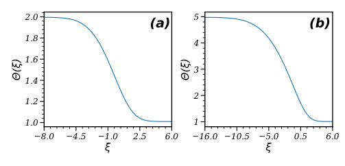
<figcaption class="paper-figure-caption"><b>Fig 1.</b> FIG. 1. Scaling function Θ(ξ) for TL/TR = 2 (left panel) and 5 (right panel).</figcaption>
</figure>
<figure class="paper-figure-card">
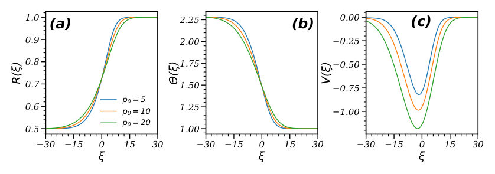
<figcaption class="paper-figure-caption"><b>Fig 2.</b> FIG. 2. Dependence of the NSE solution on the initial pressure p0: Rescaled density R (a), velocity V (b), and temperature Θ (c) as functions of the rescaled coordinate ξ, obtained from numerical solution of Eqs. (18) and (19) for pressures p0 = 5, 10, and 20. As the pressure increases, the transition region broadens, and the magnitude of the negative velocity peak increases. The parameters are ρL = 0.075, ρR = 0.15, TR = p0/[ρRZ(ρR)], and TL = p0/[ρLZ(ρL)].</figcaption>
</figure>
<figure class="paper-figure-card">

<figcaption class="paper-figure-caption"><b>Fig 3.</b> FIG. 3. Dependence of the finite-density solution on the density ratio ρR/ρL: Shown are the rescaled density R (a), velocity V (b), and temperature Θ (c) as functions of the rescaled coordinate ξ, obtained from the numerical solution of Eqs. (18) and (19) for ρR = 3ρL/2, 2ρL, and 5ρL/2, with ρL = 0.075. As ρR increases, the density and temperature profiles become steeper, while the magnitude of the negative velocity peak increases, and its position shifts to the left. The parameters are: p0 = 10, TR = p0/[ρRZ(ρR)], and TL = p0/[ρLZ(ρL)].</figcaption>
</figure>
<figure class="paper-figure-card">
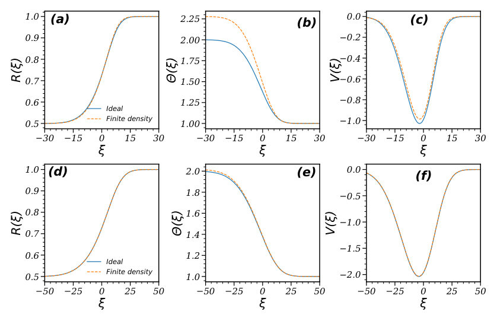
<figcaption class="paper-figure-caption"><b>Fig 4.</b> FIG. 4. Finite-density hard disk gas vs. ideal gas. Shown are the rescaled density R, velocity V , and temperature Θ as functions of the rescaled coordinate ξ, obtained from the numerical solution of Eqs. (18) and (19). Panels (a–c) correspond to the initial densities ρL = 0.075 and ρR = 0.15, while panels (d–f) correspond to ρL = 0.005 and ρR = 0.01. The ideal-gas results are obtained by setting the compressibility factor Z(ρ) = 1. It is evident from the plots that, as the initial densities become very small, the finite-density solution and the ideal-gas solutions converge. The parameters are: p0 = 10, TR = p0/[ρRZ(ρR)], and TL = p0/[ρLZ(ρL)].</figcaption>
</figure>
<figure class="paper-figure-card">

<figcaption class="paper-figure-caption"><b>Fig 5.</b> FIG. 5. Spatio-temporal behavior of (a–c) density, temperature, and velocity as functions of x at different times t = 100, 200, 400, and (d–f) the scaled functions and comparison with the hydrodynamic predictions. The solid lines in Figs. (a–f) represent the EDMD data, and the dashed lines in Figs. (e–f) represent the solution of Eqs. (18) and (19). We see that the MD data shows good scaling collapse in accordance with the scaling ansatz Eq. (17). The results are shown for the parameters: p0 = ρTZ(ρ) = 10, ρR = 0.15, ρL = 0.075, TR = p0/[ρRZ(ρR)], and TL = p0/[ρLZ(ρL)]. The typical simulation box for these parameters was L = 104 and W = 10 with the total of N = 11, 250 hard disks. The data...</figcaption>
</figure>
</div>

<p><strong>Summary.</strong> This work analyzes slow heat conduction in hard disk gases by coupling hydrodynamic theory with molecular dynamics simulations. The authors successfully extend the theoretical framework beyond the ideal gas limit to account for finite density effects using an appropriate equation of state. The strong agreement between theory and simulation validates the use of isobaric hydrodynamics for strongly inhomogeneous, low-Mach number cooling flows.</p>
<p><strong>Why it may be interesting.</strong> Although focused on classical fluid dynamics, the rigorous comparison between continuum hydrodynamics (derived from statistical principles) and microscopic particle simulations provides a powerful benchmark for developing non-equilibrium transport theories applicable to quantum systems.</p>
<details>
<summary>Detailed structure</summary>
<p><strong>Main problem.</strong> The study investigates slow, heat-driven non-equilibrium flow in a gas of hard disks confined to a channel under nearly isobaric conditions.</p>
<p><strong>Main result.</strong> The hydrodynamic theory, extended to finite densities using a hard-disk equation of state, shows excellent agreement with event-driven molecular dynamics simulations across both dilute and dense regimes.</p>
<p><strong>Method.</strong> The authors solve coupled one-dimensional partial differential equations derived from the low-Mach number isobaric heat-conduction formalism and compare these solutions against particle-level Molecular Dynamics (MD) simulations.</p>
<p><strong>Model / system.</strong> The system is a gas of elastically colliding hard disks confined to a long channel, modeled using hydrodynamic equations that incorporate non-ideal equation of state corrections for finite densities.</p>
<p><strong>Key observables.</strong> Temperature T(x, t), Density $\rho(x, t)$, Velocity $v(x, t)$, and Pressure $p(x, t)$.</p>
<p><strong>Important parameters / regimes.</strong> Low Mach number regime; initial conditions featuring large temperature/density contrasts but nearly equal pressures ($p \approx 	ext{const}$).</p>
<p><strong>Assumptions / limitations.</strong> The flow is assumed to be low-Mach number (neglecting acoustic dynamics), and the theory extends from an ideal gas limit to finite densities using a specific equation of state.</p>
<p><strong>Figures summary.</strong> Figures show self-similar scaling collapse of density, velocity, and temperature profiles when comparing MD data to hydrodynamic solutions; pressure plots confirm the system remains nearly isobaric over time.</p>
<p><strong>Paper structure.</strong> The paper first establishes the ideal gas limit theory, then extends it by incorporating a non-ideal equation of state for finite densities. The resulting 1D equations are solved numerically and validated against event-driven molecular dynamics simulations.</p>
</details>
<details>
<summary>Abstract</summary>
<p>We study a slow heat-driven flow in a gas of elastically colliding hard disks confined to a long channel. The initial state consists of two regions with large temperature and density contrasts but nearly equal pressures, leading to a low-Mach-number, nearly isobaric evolution. In the dilute limit, the corresponding isobaric hydrodynamic theory reduces to a previously known ideal-gas description. We extend this theory to finite densities by incorporating a non-ideal equation of state of a hard-disk fluid, and solve the resulting one-dimensional equations numerically. Finite-density effects produce appreciable deviations from the ideal-gas prediction. We then test the theory directly against event-driven molecular dynamics simulations of hard disks and find very good agreement in both the dilute and finite-density regimes. The results provide, to our knowledge, the first particle-level test of isobaric gas dynamics of a strongly inhomogeneous cooling flow.</p>
</details>
<p><sub><a href="#top">↑ back to top</a></sub></p>

<p><a id="paper-2607.00100"></a></p>
<h3 id="velocity-of-a-quantum-particle-in-a-classically-forbidden-region"><a href="http://arxiv.org/abs/2607.00100v1">Velocity of a Quantum Particle in a Classically Forbidden Region</a></h3>
<p><strong>Authors:</strong> Christian Beck, Sheldon Goldstein, Dustin Lazarovici, Roderich Tumulka, Nino Zanghi<br>
<strong>Type:</strong> theory · <strong>Category:</strong> other · <strong>PDF:</strong> <a href="https://arxiv.org/pdf/2607.00100v1">https://arxiv.org/pdf/2607.00100v1</a><br>
<strong>Analysis basis:</strong> full PDF text, analyzed in chunks
<strong>Topic relevance:</strong> <code>quantum measurements</code> <strong>3/5</strong> · <code>non-equilibrium dynamics</code> <strong>2/5</strong> · <code>measurement-induced transitions</code> <strong>1/5</strong> · <code>methods for driven-dissipative</code> <strong>1/5</strong></p>
<div class="figure-strip-hint">↔ Scroll figures horizontally</div>
<div class="paper-figures-scroll">
<figure class="paper-figure-card">

<figcaption class="paper-figure-caption"><b>Fig 1.</b> Figure 1: Illustration of the potential landscape underlying the experimental setup (dark: low, light: high). The main waveguide at y = y0 extends throughout; for x ≥0 the transverse potential becomes a double-well, side- coupling the main waveguide to a parallel auxiliary waveguide at y = −y0. At x = 0, there is a potential step, acting as a barrier for the particle incident from the main waveguide. An explicit form is given in (2) below.</figcaption>
</figure>
<figure class="paper-figure-card">

<figcaption class="paper-figure-caption"><b>Fig 2.</b> Figure 2: Potentials V&lt; and V&gt; as in (2)</figcaption>
</figure>
<figure class="paper-figure-card">
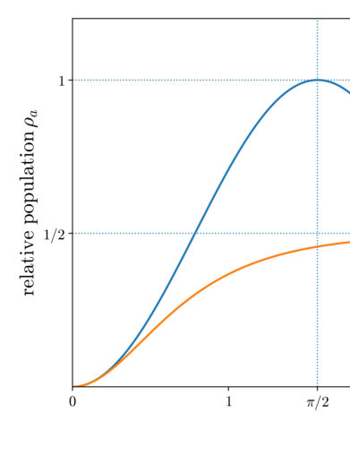
<figcaption class="paper-figure-caption"><b>Fig 3.</b> Figure 3: Relative population ρa in the auxiliary waveguide as a function of longitudinal distance from the step in units of |δk|−1. In the propagative regime (blue curve), the populations oscillate between the two waveguides, with complete transfer (ρa = 1) at odd multiples of π/(2δk). In the evanes- cent regime (orange curve, as given by (29)), the populations equilibrate monotonically, approaching ρa = 1/2 over the characteristic length scale Xeq ∼1/δκ.</figcaption>
</figure>
<figure class="paper-figure-card">

<figcaption class="paper-figure-caption"><b>Fig 4.</b> Figure 4: Numerical simulation of Bohmian trajectories in the classi- cally forbidden region (x &gt; 0) of the 2D setup for V0 = 0.54 meV, ℏJ0 = 26.2 µeV, Ek0 −V0 = −0.07 meV, σk = 2.5 × 10−3 µm−1. (a) Spatial paths of 5,000 trajectories sampled from |Ψ|2. Main waveguide centered around y0 = 10 µm; auxiliary waveguide centered around −y0 = −10 µm. (b) Longitudinal coordinate X(t) for 500 representative trajectories, exhibiting parabolic turnaround. Horizontal axis centered around median reversal time. (c) Transverse coordinate Y (t) for 292 trajectories that crossed y = 0 prior to turnaround; the simultaneous reversal of X(t) and Y (t) reflects the time- reversal symmetry (66).</figcaption>
</figure>
<figure class="paper-figure-card">
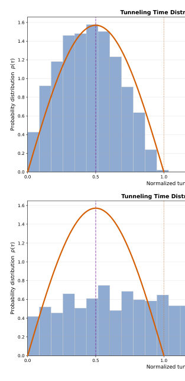
<figcaption class="paper-figure-caption"><b>Fig 5.</b> Figure 5: Distribution of tunneling times for Bohmian trajectories migrating from the main into the auxiliary waveguide of the 2D setup. Here, “tunneling time” is defined as the time the Bohmian particle takes from entering the classically forbidden region at x = 0 (in the main waveguide, y &gt; 0) until entering the auxiliary waveguide, y &lt; 0. Top: Propagative regime (Ek0 − V0 = +0.15 meV). Bottom: Evanescent regime (Ek0 −V0 = −0.07 meV). σk = 2.5×10−3 µm−1 for both. Time is shown in units of π/(2J0). The orange curve shows for comparison the distribution of the first time of crossing from y &gt; 0 to y &lt; 0, p(τ) ≈(π/2) sin(πτ), in the 1D double well model (8) with initial state ϕm.</figcaption>
</figure>
</div>

<p><strong>Summary.</strong> The authors resolve a conflict between experimental measurements and Bohmian mechanics concerning particle speeds in classically forbidden regions. They show that naive estimates based on tunneling time or simple dwell times are incorrect because they neglect entanglement effects between spatial dimensions. By correctly applying the Büttiker dwell time formula, they demonstrate quantitative agreement with Bohmian predictions.</p>
<p><strong>Why it may be interesting.</strong> This work directly addresses fundamental conceptual issues regarding quantum measurement, non-equilibrium dynamics, and the interpretation of wave function properties (like speed) in regimes where classical intuition breaks down, which is central to AMO physics.</p>
<details>
<summary>Detailed structure</summary>
<p><strong>Main problem.</strong> The paper resolves discrepancies between particle speeds inferred from experiments (Sharoglazova et al.) and predictions from Bohmian mechanics when a quantum particle tunnels through a classically forbidden region.</p>
<p><strong>Main result.</strong> The discrepancy arises because naive speed estimates fail to account for entanglement between longitudinal and transverse degrees of freedom in the evanescent regime. A corrected application of the Büttiker dwell time formula yields results that perfectly agree with Bohmian predictions.</p>
<p><strong>Method.</strong> Theoretical analysis involving detailed calculations of Bohmian trajectories, average speeds, and dwell times using a two-dimensional waveguide model derived from the Schrödinger equation.</p>
<p><strong>Model / system.</strong> A non-relativistic quantum particle modeled in coupled waveguides realizing motion in a 2D potential landscape with a barrier/potential step. The dynamics are governed by the time-dependent Schrödinger equation.</p>
<p><strong>Key observables.</strong> Bohmian velocity, average speed ($ar{v}_B$), tunneling time ($T_{tun}$), and dwell time ($ au_d$).</p>
<p><strong>Important parameters / regimes.</strong> Evanescent regime (exponential decay), coupling constants ($\mu, ar{\mu}$), energy splitting ($J_0$), and wave packet width ($\sigma_k$).</p>
<p><strong>Assumptions / limitations.</strong> The core assumption challenged is that transverse tunneling time is independent of the longitudinal degree of freedom's entanglement effects in the evanescent regime.</p>
<p><strong>Figures summary.</strong> Figures illustrate Bohmian trajectories (parabolic paths) and compare density distributions, showing differences between propagative and evanescent regimes, particularly regarding wave function factorization.</p>
<p><strong>Paper structure.</strong> The paper progresses by first identifying the conflict with experimental results, then developing theoretical tools (Bohmian mechanics, dwell time corrections), and finally resolving the puzzle by analyzing how entanglement invalidates simple tunneling time assumptions in the forbidden region.</p>
</details>
<details>
<summary>Abstract</summary>
<p>Recently, Sharoglazova et al. [Nature 643, 67 (2025)] proposed a procedure for determining the speed of a quantum particle in the classically forbidden region of a potential step, and implemented it in a beautiful experiment. The inferred speeds disagree significantly with the Bohmian velocities, which the authors presented as an experimental challenge to Bohmian mechanics. This is puzzling because the speeds are inferred from particle populations in coupled waveguides for which Bohmian mechanics and standard quantum mechanics make identical predictions. We resolve the puzzle by a detailed theoretical analysis of the experimental setup. We show that the speed inference rests on an assumption that fails in the relevant (evanescent) regime according to both Bohmian mechanics and standard quantum mechanics -- namely that the inter-waveguide tunneling time is set by the transverse coupling and is not affected by entanglement with the longitudinal degree of freedom. We also consider a second speed estimate suggested by Sharoglazova et al., which is based on the Büttiker dwell time formula for particles in the forbidden region. We show that the authors applied the formula incorrectly, and that a correct application yields exact agreement with the predictions of Bohmian mechanics. Our analysis includes explicit calculations of Bohmian trajectories, dwell times, and longitudinal speeds in the two-dimensional waveguide model of the experiment.</p>
</details>
<p><sub><a href="#top">↑ back to top</a></sub></p>

<p><a id="paper-2607.00314"></a></p>
<h3 id="leggett-garg-inequality-in-the-massive-scalar-vacuum-no-violation-under-spacelike-separated-measurements"><a href="http://arxiv.org/abs/2607.00314v1">Leggett-Garg inequality in the massive scalar vacuum: No violation under spacelike-separated measurements</a></h3>
<p><strong>Authors:</strong> Yang Xiang<br>
<strong>Type:</strong> theory · <strong>Category:</strong> other · <strong>PDF:</strong> <a href="https://arxiv.org/pdf/2607.00314v1">https://arxiv.org/pdf/2607.00314v1</a><br>
<strong>Analysis basis:</strong> full PDF text, analyzed in chunks
<strong>Topic relevance:</strong> <code>quantum measurements</code> <strong>3/5</strong> · <code>Keldysh / 2PI / non-Gaussian methods</code> <strong>1/5</strong> · <code>entanglement &amp; information structure</code> <strong>1/5</strong> · <code>measurement-induced transitions</code> <strong>1/5</strong></p>
<div class="figure-strip-hint">↔ Scroll figures horizontally</div>
<div class="paper-figures-scroll">
<figure class="paper-figure-card">
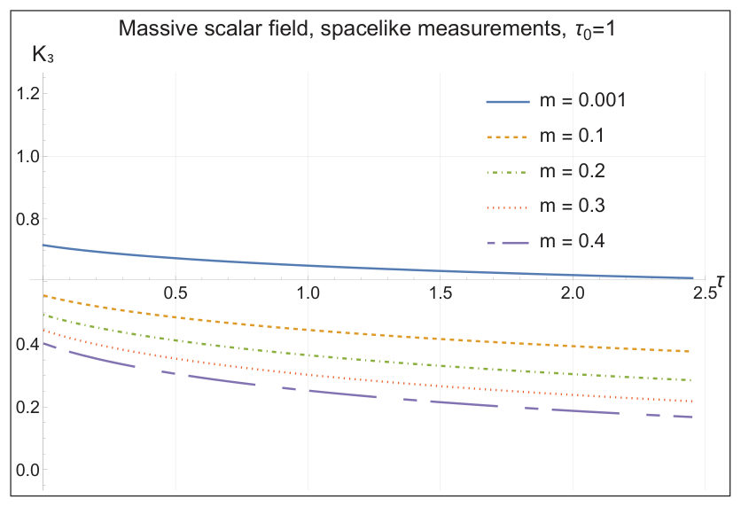
<figcaption class="paper-figure-caption"><b>Fig 1.</b> FIG. 1. K3(τ, L) for the massive scalar field with spacelike-separated measurements (L = τ +2+ǫ, ǫ = 10−3) for various masses m. The thin horizontal line marks the classical bound K3 = 1; for all masses considered, K3 remains strictly below 1. For each mass, the maximum occurs at the smallest accessible τ (τ = 0.001), and Kmax 3 decreases monotonically as m increases, from Kmax 3 ≈0.716 at m = 0.001 down to 0.403 at m = 0.4. For τ ≥2, the two time windows no longer overlap; the curves decay exponentially with τ, as expected from the spacelike decay of the massive Hadamard function.</figcaption>
</figure>
</div>

<p><strong>Summary.</strong> This theoretical paper investigates whether the vacuum state of a massive scalar field violates the Leggett-Garg inequality (LGI) when measurements are strictly spacelike separated. By employing a protocol that rigorously satisfies noninvasive measurability, the authors calculate the LGI parameter $K_3$ and find it remains below the classical bound of 1. This result highlights a fundamental distinction between spatial entanglement violations (Bell tests) and temporal macrorealism in relativistic quantum fields.</p>
<p><strong>Why it may be interesting.</strong> This work provides a rigorous methodological benchmark by successfully adapting Bell/LGI tests to QFT while satisfying causality constraints. The contrast between violating spatial Bell inequalities and preserving temporal macrorealism is highly relevant for understanding quantum foundations in relativistic settings.</p>
<details>
<summary>Detailed structure</summary>
<p><strong>Main problem.</strong> The paper aims to test for macrorealism using the Leggett-Garg inequality (LGI) in a relativistic quantum field theory setting, specifically by ensuring noninvasive measurability (NIM) through spacelike separation.</p>
<p><strong>Main result.</strong> Under strict spacelike separation conditions, the vacuum state of a free massive scalar field does not violate the LGI ($K_3 < 1$), establishing that macrorealism is preserved for Gaussian fields in this context.</p>
<p><strong>Method.</strong> The authors use a protocol involving three independent ensembles measured at spacelike-separated events to calculate the LGI parameter $K_3$ from two-time correlation functions derived using the Heisenberg picture.</p>
<p><strong>Model / system.</strong> The system modeled is a free massive scalar field ($\phi$) in 1+1 dimensions. The test utilizes dichotomic observables defined by the sign of smeared field values, $  ext{sign}(\phi(f))$.</p>
<p><strong>Key observables.</strong> The primary diagnostic is the LGI parameter $K_3 = 2C(	au, L) - C(2	au, 2L)$, derived from two-time correlation functions $C(	au, L)$.</p>
<p><strong>Important parameters / regimes.</strong> Mass ($m$), time separation ($  au$), and spatial separation ($L$). The condition $L > 	au + 2	au_0$ ensures spacelike separation.</p>
<p><strong>Assumptions / limitations.</strong> The protocol strictly satisfies the Noninvasive Measurability (NIM) condition by ensuring all measurement events are spacelike separated. Calculations rely on the Gaussian nature of the vacuum state for free fields.</p>
<p><strong>Figures summary.</strong> Figure 1 plots $K_3(	au, L)$ versus $    au$, showing that $K_3 < 1$ and demonstrating exponential decay for large time separations ($ au \ge 2$).</p>
<p><strong>Paper structure.</strong> The paper establishes the theoretical framework by defining the LGI test in QFT with NIM. It then calculates the necessary two-time correlation functions using techniques appropriate for spacelike separation, culminating in a numerical demonstration that $K_3$ remains below the classical bound of 1.</p>
</details>
<details>
<summary>Abstract</summary>
<p>We overcome the long-standing noninvasive measurability (NIM) challenge in Leggett-Garg tests by exploiting the causal structure of quantum field theory (QFT). Our protocol uses three independent ensembles of the vacuum state, each measured by a different pair of observers at spacelike-separated events, yielding the three two-time correlators. By placing these events at positions $(0,0)$, $(τ,L)$, and $(2τ,2L)$ with $L>τ+2τ_0$, we rigorously ensure that no measurement can influence another. We investigate the vacuum state of a free massive scalar field in 1+1 dimensions, employing the dichotomic observable $Q(f)=\operatorname{sign}(φ(f))$ where $φ(f)$ is the smeared field. In the Heisenberg picture, the time evolution is absorbed into a translation of the time-window function, allowing us to derive the two-time correlation function $C(τ,L)$ and the Leggett-Garg parameter $K_3=2C(τ,L)-C(2τ,2L)$. For non-overlapping time windows, we find that the correlation function decays exponentially with $τ$ for a massive field. For overlapping windows, our numerical computation for a rectangular time window yields $K_3<1$ across the entire mass range, firmly establishing that the vacuum does not violate the LGI. Thus, under strict noninvasive conditions, the vacuum shows no violation of macrorealism, in stark contrast to its well-known violation of spatial Bell inequalities. Our spacelike-separated protocol provides the first LGI test in QFT with rigorously satisfied NIM, setting a methodological benchmark for future studies and highlighting the fundamental distinction between spacelike entanglement and temporal macrorealism in relativistic quantum fields.</p>
</details>
<p><sub><a href="#top">↑ back to top</a></sub></p>

<p><a id="paper-2607.01038"></a></p>
<h3 id="exact-interlayer-triplet-pairing-eigenstates-in-the-extended-hubbard-model"><a href="http://arxiv.org/abs/2607.01038v1">Exact interlayer triplet-pairing eigenstates in the extended Hubbard model</a></h3>
<p><strong>Authors:</strong> F. X. Liu, Z. Song<br>
<strong>Type:</strong> theory · <strong>Category:</strong> strongly correlated electrons · <strong>PDF:</strong> <a href="https://arxiv.org/pdf/2607.01038v1">https://arxiv.org/pdf/2607.01038v1</a><br>
<strong>Analysis basis:</strong> full PDF text, analyzed in chunks
<strong>Topic relevance:</strong> <code>analog quantum simulation</code> <strong>3/5</strong> · <code>entanglement &amp; information structure</code> <strong>1/5</strong> · <code>non-equilibrium dynamics</code> <strong>1/5</strong></p>
<div class="figure-strip-hint">↔ Scroll figures horizontally</div>
<div class="paper-figures-scroll">
<figure class="paper-figure-card">

<figcaption class="paper-figure-caption"><b>Fig 1.</b> FIG. 1. (a) Schematic illustration of a multi-layered lattice system. The index m ∈[1, λ] labels the layers. All layers are identical bipartite lattices. The interlayer hopping and interaction are nearest-neighbor. (b) The simplest example of the system is an N × λ square lattice, where the layers reduce to chains. The parameters of the extended Hubbard model are indicated in the panel. The key feature is that the nearest-neighbor interactions exist only between layers. The triplet pair presented in this work is formed across two nearest-neighbor sites on two layers (labeled by a red dashed line surrounding the two sites), while the singlet pair is an on-site pair (labeled by a red dashed...</figcaption>
</figure>
<figure class="paper-figure-card">

<figcaption class="paper-figure-caption"><b>Fig 2.</b> FIG. 2. Plots of the fidelity defined in Eq. (22) for the initial</figcaption>
</figure>
<figure class="paper-figure-card">
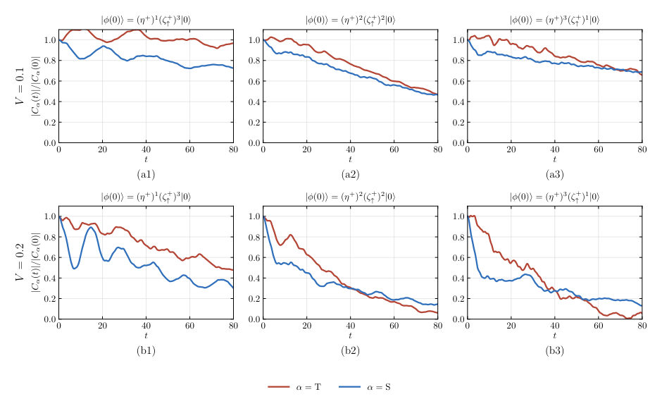
<figcaption class="paper-figure-caption"><b>Fig 3.</b> FIG. 3. Plots of the two correlation functions CS(r, t) and CT(r, t) defined in Eqs. (23) and (24) for three initial pair states</figcaption>
</figure>
</div>

<p><strong>Summary.</strong> The authors propose and derive exact interlayer triplet-pairing eigenstates for the multi-layer extended Hubbard model. These unique states only exist in bilayer and trilayer systems due to specific constraints on the Hamiltonian's algebra. The study confirms these states via time evolution simulations, highlighting a coexistence of singlet and triplet pairing mechanisms.</p>
<p><strong>Why it may be interesting.</strong> This work provides a rigorous analytical framework for finding exotic, long-range ordered states in strongly correlated lattice models, which is highly relevant for understanding high-$T_c$ superconductivity mechanisms beyond simple mean-field treatments.</p>
<details>
<summary>Detailed structure</summary>
<p><strong>Main problem.</strong> The work investigates the existence and properties of exact interlayer triplet-pairing eigenstates within the multi-layer extended Hubbard model, extending prior knowledge on $\eta$-pairing states.</p>
<p><strong>Main result.</strong> Exact condensate-pair eigenstates exhibiting off-diagonal long-range order are found for bilayer and trilayer systems when interlayer interactions are present. These states demonstrate a unique pairing mechanism distinct from the standard $\eta$-pairing symmetry.</p>
<p><strong>Method.</strong> The analysis relies on constructing these exact eigenstates by analyzing commutation relations involving the Hamiltonian and specialized triplet-pairing operators, utilizing a Restricted Spectrum Generating Algebra (RSGA).</p>
<p><strong>Model / system.</strong> The system is the multi-layer extended Hubbard model defined on a 2D square lattice with parameters including intralayer hopping ($t$), interlayer hopping ($t_\perp$), on-site repulsion ($U$), and interlayer interaction ($V$). The Hamiltonian incorporates both singlet ($\eta$) and triplet ($\zeta$) pairing channels.</p>
<p><strong>Key observables.</strong> Off-diagonal long-range order (ODLRO), fidelity $F(t)$ under time evolution, and correlation functions for singlet ($C_S$) and triplet ($C_T$) pairs.</p>
<p><strong>Important parameters / regimes.</strong> The existence of exact states is critically dependent on the number of layers ($\lambda=2$ or $\lambda=3$) and the presence of interlayer interactions ($V \neq 0$).</p>
<p><strong>Assumptions / limitations.</strong> The derivation requires restricting Hamiltonian parameters to satisfy the conditions necessary for applying the Restricted Spectrum Generating Algebra (RSGA).</p>
<p><strong>Figures summary.</strong> Figure 2 illustrates that the fidelity $F(t)$ remains unity for $\lambda=2, 3$ when $V \neq 0$, while decaying for $\lambda=4$. Figure 3 shows correlation functions decaying when interlayer interactions are present.</p>
<p><strong>Paper structure.</strong> The paper first introduces the model and operators, derives the conditions for exact eigenstates using RSGA, proves their existence only for bilayer/trilayer systems, and finally uses quench dynamics simulations (fidelity analysis) to confirm these theoretical findings.</p>
</details>
<details>
<summary>Abstract</summary>
<p>$η$-pairing symmetry generalizes the pairing mechanisms in superconductivity but is broken in the presence of interlayer interactions. In this work, we extend this approach to triplet pairs. We propose interlayer triplet-pairing operators for the multi-layer extended Hubbard model. We find that a set of exact condensate-pair eigenstates can be constructed, which exhibit off-diagonal long-range order. In contrast to the $η$-pairing mechanism, this originates from restricted spectrum generating algebra and is only available for bilayer and trilayer systems in the presence of interlayer Hubbard interactions. Nevertheless, the system also retains the original on-site $η$-pairing symmetry in the absence of interlayer interactions. Consequently, both singlet and triplet pairs coexist in the eigenstates of the multi-layer Hubbard model. We employ quench dynamics to demonstrate the results through numerical simulations. Our findings open avenues for the study of exact condensate-pair states in strongly correlated systems.</p>
</details>
<p><sub><a href="#top">↑ back to top</a></sub></p>

<p><a id="paper-2607.00795"></a></p>
<h3 id="three-qubit-nonlocality-paradoxes-beyond-ghz"><a href="http://arxiv.org/abs/2607.00795v1">Three-qubit nonlocality paradoxes: beyond GHZ</a></h3>
<p><strong>Authors:</strong> Nadish de Silva, Santanil Jana, Ming Yin<br>
<strong>Type:</strong> theory · <strong>Category:</strong> quantum information and computing · <strong>PDF:</strong> <a href="https://arxiv.org/pdf/2607.00795v1">https://arxiv.org/pdf/2607.00795v1</a><br>
<strong>Analysis basis:</strong> full PDF text, analyzed in chunks
<strong>Topic relevance:</strong> <code>entanglement &amp; information structure</code> <strong>3/5</strong> · <code>correlated / nonlocal dissipation</code> <strong>1/5</strong> · <code>quantum measurements</code> <strong>1/5</strong></p>
<div class="figure-strip-hint">↔ Scroll figures horizontally</div>
<div class="paper-figures-scroll">
<figure class="paper-figure-card">

<figcaption class="paper-figure-caption"><b>Fig 1.</b> Figure 1: The one-qubit geometry of a balanced state. The red vectors are the states |vλ⟩and |wλ⟩, symmetric about the equator, while Eϕ is an equatorial measurement.</figcaption>
</figure>
<figure class="paper-figure-card">
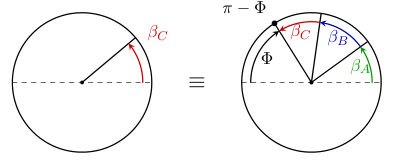
<figcaption class="paper-figure-caption"><b>Fig 2.</b> Figure 2: Schematic form of the β-equation. Here βA := β(λ1, A + aπ), βB := β(λ2, B + bπ), and βC := β(λ3, C + cπ). The event (A, B, C) 7→(a, b, c) is impossible exactly when the three angle contributions sum to the target direction π −Φ.</figcaption>
</figure>
<figure class="paper-figure-card">
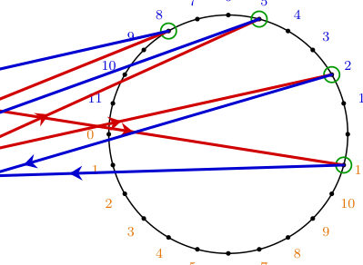
<figcaption class="paper-figure-caption"><b>Fig 3.</b> Figure 4: A concrete witness path in the bipartite implication graph, drawn on the literal 2N-clock for N = 12. Each circle is a copy of Z24: the blue and orange labels are the outcome-0 and outcome-1 copies of the measurement clock Z12, so antipodal points represent complementary literals of the same measurement. The green-ringed vertices are the literals traversed by the path; the red and blue arrows are implication edges arising from the two Charlie conditionings, and the path alternates between these two partial matchings. Its Alice measurement indices form the return-map coset 1+3Z12 = {1, 4, 7, 10}, while the corresponding Bob indices form the paired reflected coset 2 + 3Z12 = {2, 5,...</figcaption>
</figure>
<figure class="paper-figure-card">

<figcaption class="paper-figure-caption"><b>Fig 4.</b> Figure 5: Implication graph for the total Charlie assignment z = (0, 0, 0, 0) of Example 5.5(1).</figcaption>
</figure>
</div>

<p><strong>Summary.</strong> This paper provides a comprehensive and mathematically rigorous classification of three-qubit nonlocality paradoxes, demonstrating that these paradoxical structures are far richer than previously thought. Using graph theory and combinatorial techniques, the authors map out the precise conditions under which quantum correlations violate classical expectations. This advances our understanding of fundamental quantum advantages beyond simple state examples.</p>
<p><strong>Why it may be interesting.</strong> While focused on quantum information theory, the rigorous mathematical classification of fundamental resource measures like nonlocality provides deep insights into the structure of quantum correlations that underpin many-body physics models.</p>
<details>
<summary>Detailed structure</summary>
<p><strong>Main problem.</strong> To completely classify all three-qubit nonlocality paradoxes established via a biconditional parity proof, extending beyond previously known examples like the GHZ paradox.</p>
<p><strong>Main result.</strong> The authors provide a complete structural classification for these paradoxes, showing that they are abundant and violate prior regularity assumptions. They also present explicit examples of paradoxes arising from states outside the interpolant family.</p>
<p><strong>Method.</strong> The work employs advanced techniques combining graph theory (2-CNF formulae, implication graphs) with combinatorial analysis to characterize logical obstructions in quantum correlations.</p>
<p><strong>Model / system.</strong> The study focuses on three-qubit quantum systems and the concept of 'nonlocality paradoxes,' which are logical contradictions arising when assuming classical probabilistic models for quantum measurement outcomes.</p>
<p><strong>Key observables.</strong> Nonlocal fraction, unsatisfiable sets of constraints derived from impossible measurement contexts (e.g., $\Omega(z)$ or $\Psi(z)$).</p>
<p><strong>Important parameters / regimes.</strong> The number of qubits ($n=3$), the structure of the measurements (equatorial settings), and parameters defining the state $|	ext{B}(\lambda, \Phi)
angle$.</p>
<p><strong>Assumptions / limitations.</strong> Initial classification focused on paradoxes admitting a biconditional parity proof; later work challenges assumptions about interpolant states.</p>
<p><strong>Figures summary.</strong> Figures illustrate the geometry of balanced quantum states and schematic representations of the $eta$-equation relating angles to impossible measurement outcomes for various qubit assignments.</p>
<p><strong>Paper structure.</strong> The paper progresses from defining strong nonlocality via contextuality, establishing initial classifications using graph theory (2-SAT), developing structural tools like 'Charlie clocks,' and culminating in classifying paradoxes both within and outside the interpolant state family.</p>
</details>
<details>
<summary>Abstract</summary>
<p>Quantum nonlocality paradoxes, such as that of GHZ, provide maximally sharp logical obstructions to classical probabilistic models of quantum correlations. They are key resources in a broad variety of information-theoretic tasks that exhibit unconditional quantum advantage. For example, in nonlocal games, which are communication tasks that serve as core technical tools in recent landmark results in quantum computational complexity theory.   Their role in establishing quantum advantage motivated their study by Abramsky et al. who introduced an infinite family of three-qubit paradoxes exhibiting novel conditional structure. This was later extended by de Silva et al. into a full classification program.   In this work, we completely classify all three-qubit nonlocality paradoxes established via a biconditional parity proof; this is a very large class of paradoxes that encompasses all earlier-known examples. We do this by introducing a suite of new structural and combinatorial techniques. We find that the landscape of nonlocality paradoxes is far richer than previously understood, violating regularity conditions underlying all prior constructions.</p>
</details>
<p><sub><a href="#top">↑ back to top</a></sub></p>

<p><a id="paper-2607.01187"></a></p>
<h3 id="exploiting-symmetry-in-quantum-reservoir-computing"><a href="http://arxiv.org/abs/2607.01187v1">Exploiting Symmetry in Quantum Reservoir Computing</a></h3>
<p><strong>Authors:</strong> Markus Baumann, Michael Poppel, Thomas Gabor, Maximilian Zorn, Claudia Linnhoff-Popien, Jonas Stein<br>
<strong>Type:</strong> both · <strong>Category:</strong> disordered systems and neural networks · <strong>PDF:</strong> <a href="https://arxiv.org/pdf/2607.01187v1">https://arxiv.org/pdf/2607.01187v1</a><br>
<strong>Analysis basis:</strong> full PDF text, analyzed in chunks
<strong>Topic relevance:</strong> <code>measurement-induced transitions</code> <strong>2/5</strong> · <code>quantum measurements</code> <strong>2/5</strong> · <code>methods for driven-dissipative</code> <strong>1/5</strong> · <code>non-equilibrium dynamics</code> <strong>1/5</strong></p>
<div class="figure-strip-hint">↔ Scroll figures horizontally</div>
<div class="paper-figures-scroll">
<figure class="paper-figure-card">

<figcaption class="paper-figure-caption"><b>Fig 1.</b> Fig. 1. Compact symmetry-placement pipeline. The baseline breaks the cyclic action across encoding, coupling, measurement, and readout; the aligned model keeps it through all four interfaces.</figcaption>
</figure>
<figure class="paper-figure-card">

<figcaption class="paper-figure-caption"><b>Fig 2.</b> Fig. 2. Fixed-budget digital E/H/O/R audit. All configurations use the same 61 features per site, so differences come from symmetry placement rather than from a larger measurement budget. Panels (a)–(c) show representative Lorenz–96, advection, and Kuramoto–Sivashinsky settings: the bars summarize the best gain obtained when 0, 1, 2, 3, or all 4 interfaces are aligned, and the lower plots compare the all-untied baseline with the fully aligned model in paired test NRMSE. Panel (d) shows the full 16-configuration E/H/O/R lattice. Each node is one switch setting, and darker color means larger mean gain over the all-untied baseline. Aligning all four interfaces (E+H+O+R) gives the largest mean...</figcaption>
</figure>
<figure class="paper-figure-card">
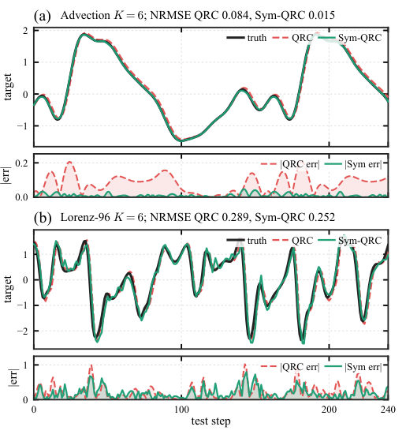
<figcaption class="paper-figure-caption"><b>Fig 3.</b> Fig. 3. Diagnostic K = 6 forecast/error zooms, not included in the main K ∈{8, 10, 12} aggregate: advection (a) and Lorenz–96 (b). NRMSE is computed on the full diagnostic traces. Sym-QRC denotes the fully aligned 1111 model; QRC denotes the all-untied 0000 baseline.</figcaption>
</figure>
<figure class="paper-figure-card">
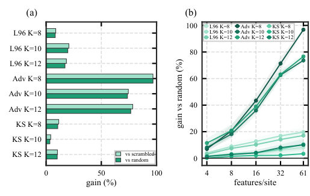
<figcaption class="paper-figure-caption"><b>Fig 4.</b> Fig. 4. Equal-budget measurement control. E, H, and R are fixed active, so only the measurement assignment changes. Panel (a) shows that the 61-feature orbit-aligned map outperforms scrambled and random 61-feature maps. Panel (b) varies the feature budget from 4 to 61 features per site; each curve is one task/ring-size setting, showing that orbit alignment helps already at small budgets and usually improves as more channels are measured.</figcaption>
</figure>
</div>

<p><strong>Summary.</strong> This work addresses the challenge of imposing symmetry in Quantum Reservoir Computing (QRC) by showing that symmetry must be enforced across all computational interfaces—encoding, dynamics, measurement, and readout. By introducing 'observable-orbit completion,' the authors demonstrate that aligning these four components yields substantial performance gains on forecasting tasks using both simulated and real-world data.</p>
<p><strong>Why it may be interesting.</strong> It provides a concrete, actionable blueprint for how to incorporate physical symmetries into complex quantum machine learning models, moving beyond simple Hamiltonian symmetry constraints to address measurement limitations.</p>
<details>
<summary>Detailed structure</summary>
<p><strong>Main problem.</strong> In Quantum Reservoir Computing (QRC), simply making the quantum reservoir symmetric is insufficient; the relevant symmetry must be explicitly visible in the final measured feature map for successful training.</p>
<p><strong>Main result.</strong> Achieving optimal performance requires enforcing cyclic equivariance across all four architectural interfaces—encoding, dynamics, measurement, and readout—a concept termed 'observable-orbit completion'.</p>
<p><strong>Method.</strong> The authors developed an 'observable-orbit completion' protocol that systematically measures symmetry-related observable channels across the entire system architecture to ensure consistency.</p>
<p><strong>Model / system.</strong> The study uses QRC applied to cyclic time-series forecasting tasks (e.g., weather data on a latitude circle) implemented via quantum circuits, tested on spin-ring models and real-world datasets like WeatherBench 2.</p>
<p><strong>Key observables.</strong> Normalized Root Mean Square Error (NRMSE) reduction; quantitative performance gains (%) when comparing fully aligned vs. baseline configurations across the four interfaces (E/H/O/R).</p>
<p><strong>Important parameters / regimes.</strong> The feature set size is fixed at 61 features per site, comprising various Pauli channels and context features.</p>
<p><strong>Assumptions / limitations.</strong> The method assumes a candidate symmetry group derived from task geometry or domain knowledge; the gains are shown to be robust across different physical implementations (spin-ring, real weather data).</p>
<p><strong>Figures summary.</strong> Figures illustrate performance comparisons showing significant gains when all four interfaces are aligned compared to scrambled baselines. Table III quantifies these partial and full alignment gains.</p>
<p><strong>Paper structure.</strong> The paper establishes the theoretical necessity of symmetry reaching the measurement layer, details the 'four-interface audit' framework (E/H/O/R), presents quantitative results across multiple forecasting tasks (L96, Advection, WeatherBench 2), and validates findings on both simulated spin-rings and actual hardware.</p>
</details>
<details>
<summary>Abstract</summary>
<p>Symmetry is a powerful inductive bias, but in quantum reservoir computing (QRC) it cannot be imposed only by making the reservoir symmetric. QRC maps inputs through fixed quantum dynamics into nonlinear expectation-value features and trains only a classical readout, so the relevant symmetry must be visible in the measured feature map. We study cyclic forecasting tasks, such as sensors around a turbine or weather stations along a latitude circle, where the same local pattern should be forecast by the same rule wherever it appears on the ring. Thus, rotating the input by one site should rotate, not change, the predicted field. We show that a symmetric Hamiltonian is not enough: even large Pauli measurement sets can fail if their channels do not match the data symmetry, since optimization cannot recover channels that were never measured. We address this through observable-orbit completion, which measures symmetry-related observable channels and aligns encoding, dynamics, measurement, and readout. The strongest gains arise from aligning all four interfaces together, with matched spin-ring, real-weather, and IBM hardware checks supporting the same measured-span mechanism.</p>
</details>
<p><sub><a href="#top">↑ back to top</a></sub></p>

<p><a id="paper-2607.00998"></a></p>
<h3 id="limitations-of-error-model-approximations-in-quantum-network-simulation"><a href="http://arxiv.org/abs/2607.00998v1">Limitations of Error Model Approximations in Quantum Network Simulation</a></h3>
<p><strong>Authors:</strong> Julia Freund, Jorge Miguel-Ramiro, Julius Wallnöfer, Wolfgang Dür<br>
<strong>Type:</strong> theory · <strong>Category:</strong> quantum information and computing · <strong>PDF:</strong> <a href="https://arxiv.org/pdf/2607.00998v1">https://arxiv.org/pdf/2607.00998v1</a><br>
<strong>Analysis basis:</strong> full PDF text, analyzed in chunks
<strong>Topic relevance:</strong> <code>entanglement &amp; information structure</code> <strong>2/5</strong> · <code>correlated / nonlocal dissipation</code> <strong>1/5</strong> · <code>driven-dissipative phase transition</code> <strong>1/5</strong> · <code>methods for driven-dissipative</code> <strong>1/5</strong> · <code>non-equilibrium dynamics</code> <strong>1/5</strong></p>
<div class="figure-strip-hint">↔ Scroll figures horizontally</div>
<div class="paper-figures-scroll">
<figure class="paper-figure-card">
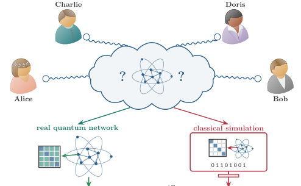
<figcaption class="paper-figure-caption"><b>Fig 1.</b> FIG. 1. A real quantum network (left) represents the true out- come of a communication task, e.g., successfully establishing a multipartite entangled state between Alice, Bob, Charlie, and Doris, while its classical simulation (right) predicts that out- come using simplified error models. Simplified assumptions on realistic noise can lead to qualitative and quantitative dis- agreement between the predicted and true outcomes in either direction.</figcaption>
</figure>
<figure class="paper-figure-card">
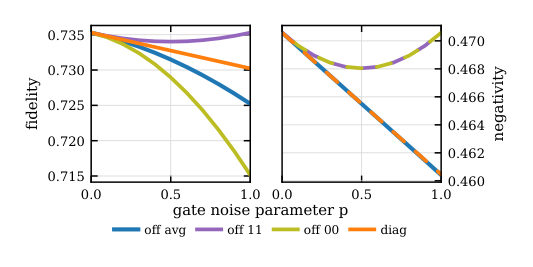
<figcaption class="paper-figure-caption"><b>Fig 2.</b> FIG. 3. Fidelity (left) and negativity (right) after one DEJMPS step on a pdep = 0.4 depolarized |Ψ0,0⟩Bell state, with initial fidelity/negativity 0.7/0.4. Operational noise is modeled as a deterministic over-rotation UY(±π/64), with opposite phases on the spatially separated qubits. Curves represent the 00 (olive) and 11 (purple) approximation noise outcomes, their average (blue), and the corresponding PTA (orange).</figcaption>
</figure>
<figure class="paper-figure-card">

<figcaption class="paper-figure-caption"><b>Fig 3.</b> FIG. 2. Settings overview: we consider |Ψ0,0⟩Bell states with initial depolarizing or amplitude damping noise (white circles). Operational noise is either an over-rotation (curved arrows) or amplitude damping noise (double downward ar- row). a) Entanglement purification: from two identical initial states, the first pair is probabilistically distilled into a less noisy state (hatched circles) by applying local unitaries, a bi- lateral CNOT between the two copies (arrow), and local Pauli Z measurements on the second copy; the distillation succeeds, and the first pair is kept, only if the measurement outcomes coincide (00 or 11). For the next EPP round, two identical copies are again assumed,...</figcaption>
</figure>
<figure class="paper-figure-card">

<figcaption class="paper-figure-caption"><b>Fig 4.</b> FIG. 4. Fidelity over DEJMPS EPP steps for an initial |Ψ0,0⟩ Bell state under depolarizing noise pdep = 0.4. Operational errors are modeled as deterministic UY(±π/64) over-rotations with opposite phases. The 00 (olive) and 11 (purple) approx- imation noise outcomes converge to slightly different values than their average (blue) and the corresponding PTA (or- ange).</figcaption>
</figure>
<figure class="paper-figure-card">

<figcaption class="paper-figure-caption"><b>Fig 5.</b> Fig. 4 shows the fidelity as a function of the number of purification steps for two trajectories of fixed measure- ment outcome, 00 (olive) or 11 (purple), their averages (blue) and the corresponding PTA (orange). We yield slightly different asymptotic fidelity results that accumu- late in the iterative application of the EPP. Of course, all combinations of measurement outcomes may occur, but we highlight only the most extreme cases. Similarly, we analyze how the DEJMPS protocol also shows differences in the amplitude damping vs. reset channel approximation scenario. In Fig. 5, we plot the fidelity results over the number of DEJMPS steps. We observe that the reset channel approximation...</figcaption>
</figure>
</div>

<p><strong>Summary.</strong> This paper demonstrates that common classical approximations for simulating noise in quantum networks—such as Pauli twirling or using reset channels—introduce severe errors when predicting protocol performance. By analyzing entanglement purification and swapping, the authors show that neglecting coherent error terms leads to qualitative failures, proving that rigorous validation of complete noise architectures is essential for reliable quantum technology predictions.</p>
<p><strong>Why it may be interesting.</strong> For a theoretical physicist working on open quantum systems, this work provides concrete examples of how the choice of error model in simulation can fundamentally alter predictions about achievable quantum communication thresholds, emphasizing the necessity of retaining full system coherence.</p>
<details>
<summary>Detailed structure</summary>
<p><strong>Main problem.</strong> Simplified error models used for simulating large-scale quantum networks can lead to severe quantitative and qualitative errors in predicting protocol performance.</p>
<p><strong>Main result.</strong> Neglecting coherent error contributions, such as off-diagonal Pauli terms or systematic over-rotations, causes approximations (like Pauli Twirling) to fail dramatically compared to exact simulations. These failures manifest as outcome-dependent fidelity discrepancies across iterative protocols.</p>
<p><strong>Method.</strong> The authors compare the performance of quantum network protocols (e.g., entanglement purification, swapping) simulated using full error models against those using simplified noise approximations like Pauli twirling or reset channels.</p>
<p><strong>Model / system.</strong> The study focuses on simulating quantum networks and communication protocols such as entanglement purification (DEJMPS protocol), entanglement swapping, and repeater chains. The underlying physics involves noisy operations modeled by various types of noise, including amplitude damping and coherent over-rotations.</p>
<p><strong>Key observables.</strong> Fidelity and Negativity are the primary diagnostics used to quantify protocol performance across different measurement outcomes (e.g., 00 vs 11).</p>
<p><strong>Important parameters / regimes.</strong> Noise parameters such as depolarizing noise strength ($p_{	ext{dep}}$), amplitude damping rates ($\gamma$), and over-rotation angles ($\phi$) are varied.</p>
<p><strong>Assumptions / limitations.</strong> The core limitation explored is the assumption that error channels can be accurately mapped onto diagonal Pauli channels or simple reset approximations, which fundamentally ignores coherent off-diagonal noise correlations.</p>
<p><strong>Figures summary.</strong> Figures compare fidelity and negativity for entanglement purification (Fig. 3), show the divergence between amplitude damping and reset channel models (Fig. 5), and track performance degradation across repeater chains using both exact and approximated error channels (Fig. 8, 11).</p>
<p><strong>Paper structure.</strong> The paper systematically analyzes protocols like EPP and swapping, contrasting results derived from tracking individual measurement outcomes (retaining coherence) versus averaging or applying simplified diagonal noise models.</p>
</details>
<details>
<summary>Abstract</summary>
<p>Efficient classical simulation of large-scale quantum networks frequently relies on noise approximations, which consider a restricted set of operators to describe noisy channels and operations. In this work, we demonstrate how such simplified error models, such as Pauli twirling or reset channels, can lead to severe quantitative and qualitative discrepancies in protocol performance predictions. We analyze, in particular, how small differences can accumulate in iterative and sequential protocols such as entanglement purification, entanglement swapping, and repeater chains. Our results reveal that neglected error contributions can lead to important performance under- and over-estimations, measurement-outcome dependency, and oscillations in the fidelity, which are entirely overlooked by the simplified error model approximations. These results show that rigorous validation of complete noise architectures is indispensable for accurately predicting operational thresholds in future quantum technologies.</p>
</details>
<p><sub><a href="#top">↑ back to top</a></sub></p>

<p><a id="paper-2607.00467"></a></p>
<h3 id="single-cell-level-distributions-and-relationships-can-differentiate-cell-division-and-growth-models"><a href="http://arxiv.org/abs/2607.00467v1">Single-cell-level distributions and relationships can differentiate cell-division and growth models</a></h3>
<p><strong>Authors:</strong> Vikas, Rahul Marathe, Anjan Roy<br>
<strong>Type:</strong> theory · <strong>Category:</strong> statistical mechanics · <strong>PDF:</strong> <a href="https://arxiv.org/pdf/2607.00467v1">https://arxiv.org/pdf/2607.00467v1</a><br>
<strong>Analysis basis:</strong> full PDF text, analyzed in chunks
<strong>Topic relevance:</strong> <code>non-equilibrium dynamics</code> <strong>2/5</strong> · <code>Keldysh / 2PI / non-Gaussian methods</code> <strong>1/5</strong> · <code>driven-dissipative phase transition</code> <strong>1/5</strong> · <code>methods for driven-dissipative</code> <strong>1/5</strong> · <code>non-equilibrium universality</code> <strong>1/5</strong></p>
<div class="figure-strip-hint">↔ Scroll figures horizontally</div>
<div class="paper-figures-scroll">
<figure class="paper-figure-card">
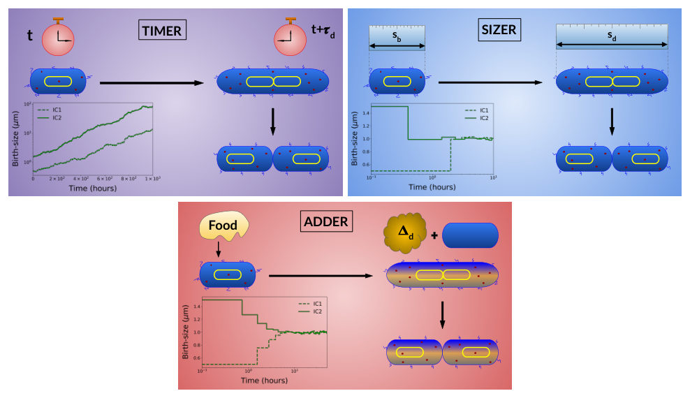
<figcaption class="paper-figure-caption"><b>Fig 1.</b> FIG. 1. Artistic representations of various cell-division models: Timer, Sizer, and Adder. The insets represent the graphs of birth-size of a random cell (versus time) tracked for many generations that follows a particular cell-division model under exponential growth, with stochasticity in the rule of cell-division, growth rate, and partitioning fraction. Here, for simplicity, the distributions for the free parameters are taken to be Gaussian. The mean division-time is taken to be 1 hour for the Timer model, mean division-size is taken to be 2µm for the Sizer model, and mean division-added-size is taken to be 1µm for the Adder model. Mean exponential growth rate is taken to be ln(2) per...</figcaption>
</figure>
<figure class="paper-figure-card">

<figcaption class="paper-figure-caption"><b>Fig 2.</b> FIG. 2. Various experimental single-cell-level distributions (obtained from the single-cell experimental data for E. coli (25◦C) [46]) compared with their analytical results – (A) Birth-size distribution, (B) Division-size distribution, (C) Division-added- size distribution, and (D) Division-time distribution, assuming a specific cell-division model (Sizer or Adder) and specific single-cell growth paradigm (linear or exponential). The three free-parameter distributions, namely the principal distribution (Ξ(sd) for the Sizer and Ω(∆d) for the Adder model), growth-rate distribution Λ(α), and partitioning-fraction distribution κ(β), are taken as Johnson SU fits to the corresponding...</figcaption>
</figure>
<figure class="paper-figure-card">
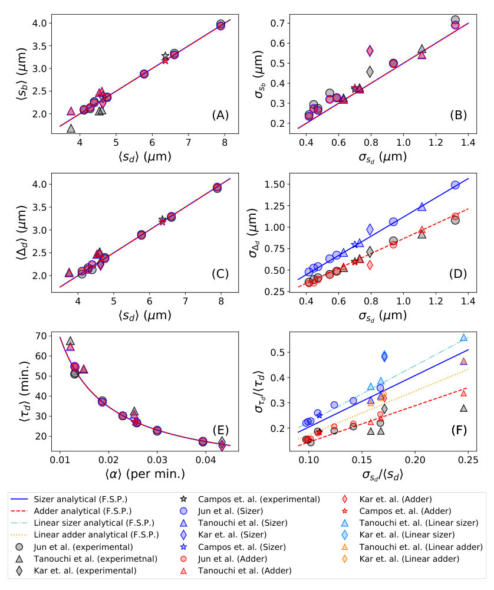
<figcaption class="paper-figure-caption"><b>Fig 3.</b> FIG. 3. Mean, standard deviation, and coefficient of variation (the ratio of standard deviation and mean) for various single-cell quantities plotted against each other – (A) mean birth-size versus mean division-size, (B) standard deviation of birth-size versus standard deviation of division-size, (C) mean division-added-size versus mean division-size, (D) standard deviation of division-added-size versus standard deviation of division-size, (E) mean division-time versus mean exponential growth rate, (F) coefficient of variation of division-time versus coefficient of variation of division-size. The data have been taken from previous studies [19, 20, 24, 46]. For Tanouchi et al. [46], the data...</figcaption>
</figure>
<figure class="paper-figure-card">
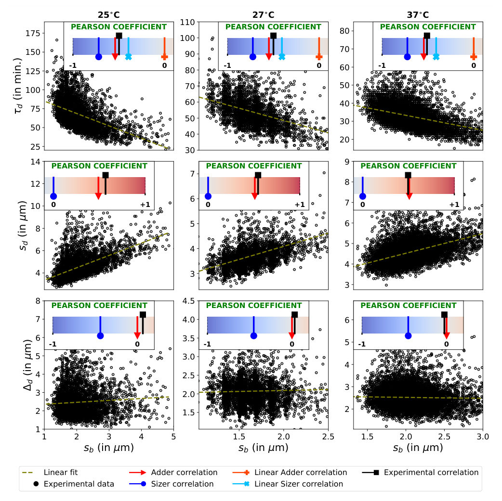
<figcaption class="paper-figure-caption"><b>Fig 4.</b> FIG. 4. Various single-cell quantities, such as τd, sd, and ∆d, plotted against sb to infer correlations of these quantities with birth-size. The experimental data have been taken from a previous study [46] for E. coli at different temperatures – 25◦C, 27◦C, and 37◦C. In the first row, τd is plotted against sb; in the second row, sd is plotted against sb; and in the third row, ∆d is plotted against sb. The first column represents these correlations at 25◦C, the second column represents the correlations at 27◦C, and the third column represents the correlations at 37◦C. The dashed line in the scatter plot represents the linear fit to the data. The insets in all of these plots compare ‘Pearson...</figcaption>
</figure>
</div>

<p><strong>Summary.</strong> This work uses advanced statistical methods to analyze single-cell measurements from bacterial growth. By examining probability distributions and correlations among size and time metrics, the authors demonstrate that one can uniquely determine whether cell division follows a Timer, Sizer, or Adder rule, and whether the underlying growth is linear or exponential. This provides a powerful diagnostic tool for understanding fundamental biophysical processes.</p>
<p><strong>Why it may be interesting.</strong> While the subject is biology, the rigorous application of stochastic processes, moment analysis, and distribution fitting to distinguish underlying physical laws mirrors techniques used in analyzing complex non-equilibrium systems in statistical mechanics.</p>
<details>
<summary>Detailed structure</summary>
<p><strong>Main problem.</strong> The study aims to differentiate between various underlying cell-division (e.g., Sizer, Adder) and single-cell growth models (linear vs. exponential) in microbial cells.</p>
<p><strong>Main result.</strong> Analysis of probability distributions, statistical relationships (especially involving standard deviations), and correlations among single-cell quantities can uniquely distinguish between different division and growth mechanisms.</p>
<p><strong>Method.</strong> The authors derive analytical probability distributions and statistical moments for key observables by assuming various underlying mechanistic models. These theoretical predictions are then compared against published experimental data.</p>
<p><strong>Model / system.</strong> The physical system is bacterial cell growth and division, modeled using concepts like Timer, Sizer, and Adder mechanisms. The analysis extends to stochastic single-cell growth and asymmetric partitioning.</p>
<p><strong>Key observables.</strong> Single-cell quantities: birth-size ($s_b$), division-size ($s_d$), division-time ($    au_d$), and division-added-size ($\Delta d$). Statistical measures include probability distributions, means, standard deviations, and correlation coefficients.</p>
<p><strong>Important parameters / regimes.</strong> Growth rate autocorrelation parameters ($\alpha$, $eta$); temperature variations (e.g., $25^\circ	ext{C}, 37^\circ	ext{C}$); partitioning fraction ($eta$).</p>
<p><strong>Assumptions / limitations.</strong> The analysis often assumes independence between certain variables (like growth rate and size parameters) or relies on approximations like assuming sharply spiked distributions for moment calculations.</p>
<p><strong>Figures summary.</strong> Figures compare experimental single-cell distributions ($s_b, s_d, \Delta d, 	au_d$) against analytical predictions from various model combinations. Plots of correlations (PCC) are used to test the consistency of different models across multiple temperatures.</p>
<p><strong>Paper structure.</strong> The paper progresses by first establishing that simple correlations are insufficient, then showing how full probability distributions and statistical relationships (means vs. standard deviations) provide stronger discriminative power between division/growth models, culminating in comparisons with experimental data.</p>
</details>
<details>
<summary>Abstract</summary>
<p>Complex interactions among regulatory molecules determine the rules underlying cell growth and division in microbial cells. While the governing molecular network may not always be obvious, it is well known that correlations among certain physiological quantities measured in experiments, such as birth-size, division-size, division-time, and division-added-size, can differentiate among various cell-division models, such as Timer, Sizer, and Adder. Here we show that, apart from these correlations, which we extend for the case of stochastic single-cell growth and stochastic asymmetric partitioning, probability distributions of these quantities and statistical relationships between them can also be used to differentiate between these division models. Interestingly, we show that these quantities can not only differentiate the division models, but also distinguish among the single-cell growth paradigms, such as linear and exponential growth. We then demonstrate this differentiability among various division and growth models by comparing our analytical results with published experimental data. We further show that these results remain valid even when the growth rate of a cell is correlated with the growth rate of cells from previous generations in the lineage.</p>
</details>
<p><sub><a href="#top">↑ back to top</a></sub></p>

<p><a id="paper-2607.00262"></a></p>
<h3 id="demographic-senescence-as-multi-level-selection-in-miniature"><a href="http://arxiv.org/abs/2607.00262v1">Demographic senescence as multi-level selection in miniature</a></h3>
<p><strong>Authors:</strong> Ananda Shikhara Bhat, Hanna Kokko<br>
<strong>Type:</strong> theory · <strong>Category:</strong> statistical mechanics · <strong>PDF:</strong> <a href="https://arxiv.org/pdf/2607.00262v1">https://arxiv.org/pdf/2607.00262v1</a><br>
<strong>Analysis basis:</strong> full PDF text, analyzed in chunks
<strong>Topic relevance:</strong> <code>non-equilibrium dynamics</code> <strong>2/5</strong> · <code>driven-dissipative phase transition</code> <strong>1/5</strong> · <code>methods for driven-dissipative</code> <strong>1/5</strong> · <code>non-equilibrium universality</code> <strong>1/5</strong></p>
<div class="figure-strip-hint">↔ Scroll figures horizontally</div>
<div class="paper-figures-scroll">
<figure class="paper-figure-card">

<figcaption class="paper-figure-caption"><b>Fig 1.</b> Figure 1: A description of the stochastic process considered in this paper in the senescence setting, where systems are organisms, sub-systems are intra-organismal sub-systems, red sub-systems are failed sub-systems, warming is failure of functioning sub-systems, and cooling is repair of failed sub-systems. (A) The model consists of M organisms, each of which have N intra-organismal sub-systems capable of failure. (B) An organism with f ∈{0, 1</figcaption>
</figure>
</div>

<p><strong>Summary.</strong> This paper mathematically proves that demographic senescence can be modeled as a multi-level selection process. By developing a two-level stochastic model and applying advanced scaling limits, the authors derive an SPDE that governs how physiological damage accumulation (low level) drives differential survival rates (high level). This unifies concepts from evolutionary biology and aging theory into a single mathematical framework.</p>
<p><strong>Why it may be interesting.</strong> The rigorous mathematical mapping between biological aging (senescence) and fundamental evolutionary dynamics like MLS provides a powerful, general framework applicable across different complex systems exhibiting trait-dependent mortality.</p>
<details>
<summary>Detailed structure</summary>
<p><strong>Main problem.</strong> To formally demonstrate that the emergent mortality patterns observed during demographic senescence can be mathematically understood as a consequence of multi-level selection.</p>
<p><strong>Main result.</strong> The authors establish a formal equivalence between senescence and MLS by deriving a limiting stochastic partial differential equation (SPDE) governing the population composition.</p>
<p><strong>Method.</strong> The methodology involves formulating a two-level Moran-type process, recasting it into a ball-and-urn scheme, and applying system-size expansion/diffusion approximations to derive continuum limits.</p>
<p><strong>Model / system.</strong> The model tracks the state of $M$ systems (organisms), each containing $N$ sub-systems. Dynamics occur at two levels: within-system changes (warming/cooling) and between-system selection (differential mortality risk).</p>
<p><strong>Key observables.</strong> Emergent mortality patterns, failure accumulation curves, and the limiting probability density function $\zeta_\lambda(f, t)$ describing population composition.</p>
<p><strong>Important parameters / regimes.</strong> The key parameters include $M$ (number of systems), $N$ (sub-systems per system), and the scaling ratio $\lambda = N/M$. The replacement probability $\varrho$ is also crucial.</p>
<p><strong>Assumptions / limitations.</strong> The analysis relies heavily on diffusion approximations, functional central limit theorems, and taking specific limits ($M 	o \infty$, $N 	o \infty$) to simplify the discrete stochastic process into continuous PDEs/SPDEs.</p>
<p><strong>Figures summary.</strong> Figure 1 illustrates the two-level dynamics: (A) showing $M$ organisms with $N$ sub-systems; (B) depicting failure accumulation and death; and (C) characterizing the system via a ball-and-urn scheme tracking failure proportions.</p>
<p><strong>Paper structure.</strong> The paper builds from defining the discrete stochastic process using a Master Equation, deriving its functional Fokker-Planck equation via diffusion approximation, and finally taking multiple scaling limits ($M 	o \infty$, $N 	o \infty$) to arrive at the final limiting SPDE governing the superprocess $\zeta_\lambda$.</p>
</details>
<details>
<summary>Abstract</summary>
<p>Multi-level selection and senescence do not at first sight have much in common. Here, we demonstrate that the emergent mortality patterns generated by demographic senescence can be understood as the product of multi-level selection. We formulate a two-level Moran type process and use its scaling limits to illustrate that a simple mathematical framework that models multi-level selection in group-structured populations also models damage accumulation patterns and resultant mortality curves in ageing organisms. To verbally make the connection, observe that defectors spread within a group consisting of cooperators and defectors; when groups compete against each other, defector-rich groups suffer, and between-group selection causes such groups to be systematically under-represented. Exactly analogously, senescing individuals accumulate damage to physiological sub-systems, and `damage begets damage'; individuals who are more damaged are more likely to die, hence damage-rich individuals are systematically under-represented in later age classes. Thus, emergent senescence patterns in complex, integrated organisms are formally equivalent to the patterns generated by a within-generation multi-level selection process in which intra-organismal sub-systems play the role of particles, organisms play the role of collectives, and selective disappearance plays the role of group selection.</p>
</details>
<p><sub><a href="#top">↑ back to top</a></sub></p>

<p><a id="paper-2607.01009"></a></p>
<h3 id="phase-diagram-of-a-double-occupancy-cell-model-of-a-fluid-with-curie-weiss-interaction"><a href="http://arxiv.org/abs/2607.01009v1">Phase diagram of a double-occupancy cell model of a fluid with Curie-Weiss interaction</a></h3>
<p><strong>Authors:</strong> R. V. Romanik, O. A. Dobush, M. P. Kozlovskii, I. V. Pylyuk, M. A. Shpot<br>
<strong>Type:</strong> theory · <strong>Category:</strong> statistical mechanics · <strong>PDF:</strong> <a href="https://arxiv.org/pdf/2607.01009v1">https://arxiv.org/pdf/2607.01009v1</a><br>
<strong>Analysis basis:</strong> full PDF text, analyzed in chunks
<strong>Topic relevance:</strong> <code>analog quantum simulation</code> <strong>2/5</strong> · <code>Keldysh / 2PI / non-Gaussian methods</code> <strong>1/5</strong> · <code>driven-dissipative phase transition</code> <strong>1/5</strong> · <code>exotic spin models in light-matter</code> <strong>1/5</strong></p>
<div class="figure-strip-hint">↔ Scroll figures horizontally</div>
<div class="paper-figures-scroll">
<figure class="paper-figure-card">
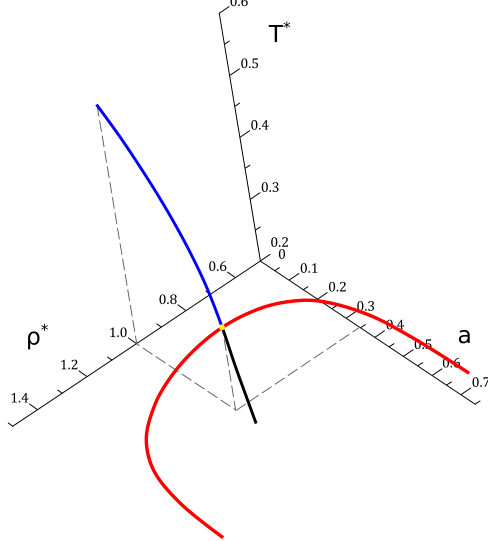
<figcaption class="paper-figure-caption"><b>Fig 1.</b> Fig. 1: Phase diagram of the double-occupancy cell model in the case of distinguishable particles. Blue curve: the line of critical points at a &lt; atc. Red curves: the lines of critical points at a &gt; atc. Black curve: the line of triple points in the interval atc &lt; a &lt; 0.5. All the lines meet at the tricritical point with a = atc = 1</figcaption>
</figure>
<figure class="paper-figure-card">
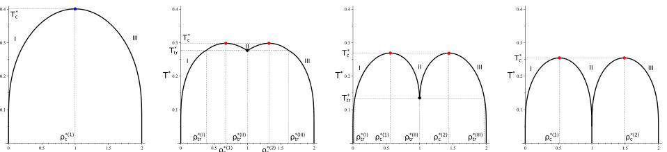
<figcaption class="paper-figure-caption"><b>Fig 2.</b> Fig. 2: The T ∗−ρ∗phase diagrams of the double-occupancy cell model in the case of distinguishable particles at different values of a = ∆/J. Solid curves are the coexistence lines. (a): The coexistence line between phases I and III ends at the critical point. (b) and (c): Coexistence lines between phases I — II and II — III are present in the temperature interval T ∗ tr ≤T ∗≤T ∗ c , each ending at its own critical point. For T ∗≤T ∗ tr, phases I and III coexist. T ∗ tr is the temperature of the triple point. (d): Coexistence lines between phases I — II and II — III are present for 0 ≤T ∗≤T ∗ c , each ending at its own critical point.</figcaption>
</figure>
<figure class="paper-figure-card">

<figcaption class="paper-figure-caption"><b>Fig 3.</b> Fig. 3: The phase diagram in the (T ∗, ρ∗, a)-space for the case of distinguishable particles. The figure combines representations of Figs. 1 and 2 in one view. Green dashed curves: the coexistence lines at a = 0.3, a = 0.375, a = 0.45, and a = 0.6. Blue and red curves are the critical-point lines. Black curve is the triple-point line.</figcaption>
</figure>
<figure class="paper-figure-card">
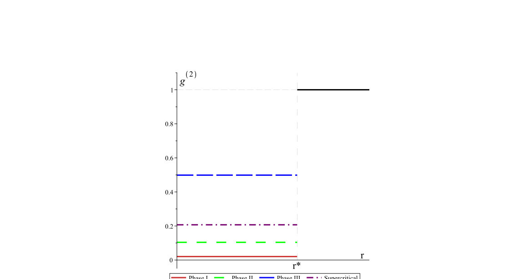
<figcaption class="paper-figure-caption"><b>Fig 4.</b> Fig. 4: Pair distribution function g(2)(r1, r2) as a function of separation r = |r1 −r2|. The quantity r∗denotes distance from the point with coordinate r1 to the boundary of the cubic cell containing r1, in the direction of r2. The results are presented for the system of distinguishable particles, at a = 0.5. Phase I: T ∗= 0.25, ρ∗= 0.1; Phase II: T ∗= 0.2, ρ∗= 0.5; Phase III: T ∗ c = 0.25, ρ∗= 1.9; Supercritical: T ∗= 0.5, ρ∗= 0.5. At r &gt; r∗, g(2) = 1.</figcaption>
</figure>
</div>

<p><strong>Summary.</strong> This theoretical study investigates a double-occupancy cell fluid model interacting via Curie-Weiss forces. By analyzing its grand canonical partition function, the authors map out a complex phase diagram showing multiple coexistence regimes. The results demonstrate how simple competition between local repulsion and long-range attraction can generate rich physics, including liquid-liquid transitions.</p>
<p><strong>Why it may be interesting.</strong> While focused on classical statistical mechanics, the mapping to the Blume-Capel model connects this work to quantum spin systems, making it relevant for understanding phase transitions in lattice models that share mathematical structure with quantum Hamiltonians.</p>
<details>
<summary>Detailed structure</summary>
<p><strong>Main problem.</strong> The study focuses on determining the complex phase diagram of a fluid modeled by a double-occupancy cell model interacting via Curie-Weiss type long-range forces.</p>
<p><strong>Main result.</strong> The competition between local repulsion and global attraction generates rich thermodynamic behavior, including regimes with single or two critical points, tricritical points, and triple points, leading to gas-liquid and liquid-liquid coexistence.</p>
<p><strong>Method.</strong> The analysis employs the grand canonical ensemble formalism, utilizing analytical techniques combined with numerical methods, notably applying Laplace's method to evaluate integrals in the thermodynamic limit.</p>
<p><strong>Model / system.</strong> The system is a double-occupancy cell fluid model where each site can hold up to two particles. This model is shown to be isomorphic to the Blume-Capel model on a complete graph.</p>
<p><strong>Key observables.</strong> Phase diagram structure, critical points $(T^*_c; 
ho^*_c)$, tricritical points, triple points, and the pair distribution function $g(2)$.</p>
<p><strong>Important parameters / regimes.</strong> The phase behavior is critically dependent on the ratio $a = \Delta/J$, which controls the balance between local repulsion ($\Delta$) and global attraction ($J$).</p>
<p><strong>Assumptions / limitations.</strong> The analysis relies on approximations in the thermodynamic limit ($N 	o \infty$) and uses mean-field descriptions, meaning it neglects local structural ordering effects.</p>
<p><strong>Figures summary.</strong> Figures illustrate the phase diagram showing lines of critical points for varying $a$, meeting at a tricritical point. Other figures show coexistence lines and spatial dependencies of pair distribution functions across different phases (I, II, III).</p>
<p><strong>Paper structure.</strong> The paper first establishes the model's isomorphism to the Blume-Capel model. It then derives the partition function in the grand canonical ensemble, evaluates it using Laplace's method, and finally maps out the phase diagram by analyzing the conditions for critical points and coexistence lines as a function of the interaction ratio $a$.</p>
</details>
<details>
<summary>Abstract</summary>
<p>A double-occupancy cell model of a fluid with Curie-Weiss interaction is studied. First, we show that the model is isomorphic to the Blume-Capel model on a complete graph through a simple transformation from spin to occupancy variables. We then investigate its phase behavior within the grand-canonical ensemble using a combination of analytical and numerical methods. Despite its simplicity, the model exhibits a remarkably rich thermodynamic behavior depending on the ratio between the local repulsive and global attractive interactions. We identify regimes characterized by a single critical point, two distinct critical points, tricritical behavior, and triple-point formation. For sufficiently strong repulsion, the system possesses three fluid phases of different densities, leading to both gas-liquid and liquid-liquid coexistence. The locations of the critical, tricritical, and triple points are determined, and the corresponding phase diagrams are constructed. These results demonstrate that the competition between double-occupancy repulsion and long-range attraction is sufficient to generate complex phase behavior in a minimal multiple-occupancy lattice-gas model.</p>
</details>
<p><sub><a href="#top">↑ back to top</a></sub></p>

<p><a id="paper-2607.00945"></a></p>
<h3 id="the-dynamical-lie-algebra-of-qaoa-maxcut-on-the-complete-graph"><a href="http://arxiv.org/abs/2607.00945v1">The Dynamical Lie Algebra of QAOA-MaxCut on the Complete Graph</a></h3>
<p><strong>Authors:</strong> Jonathan Allcock, Pei Yuan, Shengyu Zhang<br>
<strong>Type:</strong> theory · <strong>Category:</strong> quantum information and computing · <strong>PDF:</strong> <a href="https://arxiv.org/pdf/2607.00945v1">https://arxiv.org/pdf/2607.00945v1</a><br>
<strong>Analysis basis:</strong> full PDF text, analyzed in chunks
<strong>Topic relevance:</strong> <code>entanglement &amp; information structure</code> <strong>2/5</strong> · <code>methods for driven-dissipative</code> <strong>1/5</strong> · <code>non-equilibrium dynamics</code> <strong>1/5</strong></p>
<div class="figure-strip-hint">↔ Scroll figures horizontally</div>
<div class="paper-figures-scroll">
<figure class="paper-figure-card">

<figcaption class="paper-figure-caption"><b>Fig 1.</b> Low-resolution page preview, page 2</figcaption>
</figure>
<figure class="paper-figure-card">

<figcaption class="paper-figure-caption"><b>Fig 2.</b> Low-resolution page preview, page 3</figcaption>
</figure>
<figure class="paper-figure-card">
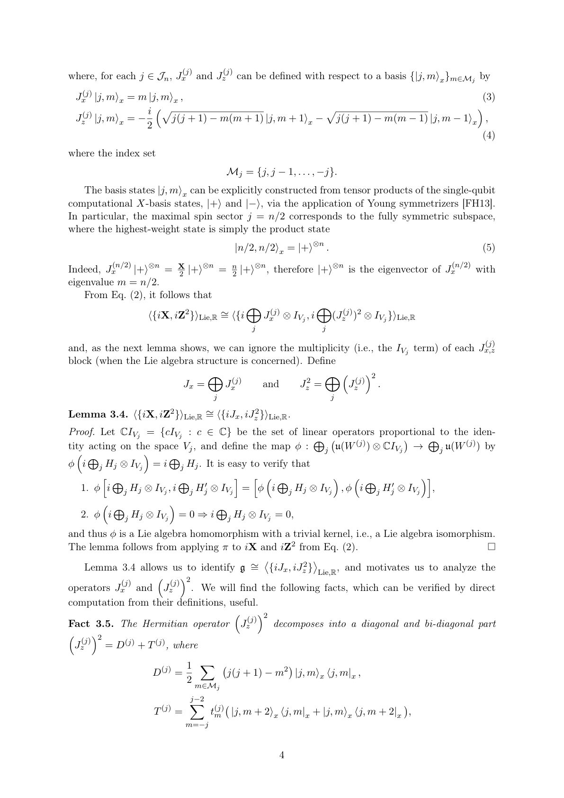
<figcaption class="paper-figure-caption"><b>Fig 3.</b> Low-resolution page preview, page 4</figcaption>
</figure>
<figure class="paper-figure-card">
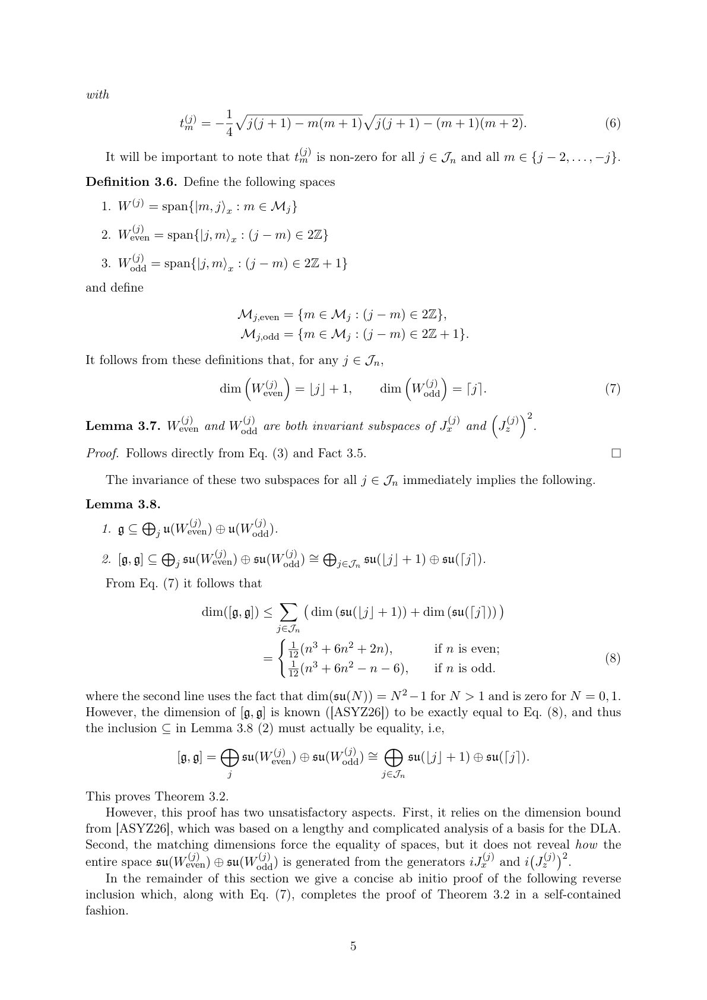
<figcaption class="paper-figure-caption"><b>Fig 4.</b> Low-resolution page preview, page 5</figcaption>
</figure>
<figure class="paper-figure-card">
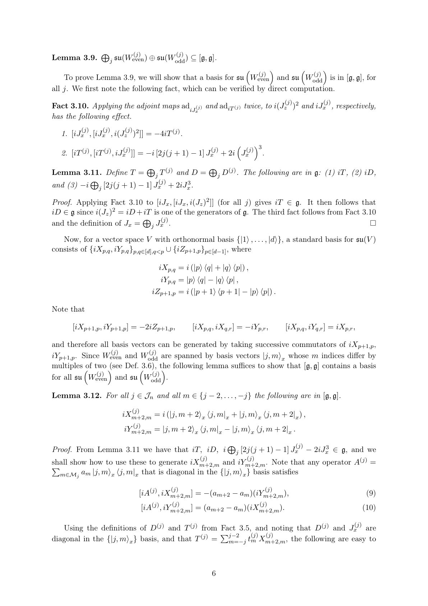
<figcaption class="paper-figure-caption"><b>Fig 5.</b> Low-resolution page preview, page 6</figcaption>
</figure>
</div>

<p><strong>Summary.</strong> The paper rigorously analyzes the dynamical Lie algebra governing QAOA applied to MaxCut on complete graphs. By proving that the loss function variance scales linearly with system size, it definitively shows that this specific algorithm avoids barren plateaus. The methodology is highly technical, relying on advanced group theory and representation theory (Schur-Weyl duality).</p>
<p><strong>Why it may be interesting.</strong> This work provides deep mathematical insight into the convergence properties of quantum algorithms by analyzing their underlying symmetry structure, which is highly relevant for understanding noise and optimization landscapes in quantum computing.</p>
<details>
<summary>Detailed structure</summary>
<p><strong>Main problem.</strong> The paper characterizes the dynamical Lie algebra (DLA) associated with running QAOA on MaxCut problems defined on complete graphs ($K_n$) and proves that this system avoids barren plateaus.</p>
<p><strong>Main result.</strong> It establishes that the variance of the loss function scales linearly ($\Theta(n)$) with the number of qubits, confirming the absence of barren plateaus for this specific quantum optimization problem.</p>
<p><strong>Method.</strong> The analysis heavily utilizes the mathematical framework of Dynamical Lie Algebras (DLAs), employing Schur-Weyl duality to decompose operators into irreducible representations of $su(2)$ and $S_n$.</p>
<p><strong>Model / system.</strong> The model is QAOA applied to the MaxCut problem on a complete graph ($K_n$) using an $n$-qubit quantum system. The analysis focuses on the structure and generators of the associated DLA.</p>
<p><strong>Key observables.</strong> Loss function variance ($  ext{Var}_   heta[\ell(
ho, O;  heta)]$), the structure of the commutator subalgebra $[\mathfrak{g}_{K_n}, \mathfrak{g}_{K_n}]$, and $s$-purities ($   ext{Ps}(
ho)$).</p>
<p><strong>Important parameters / regimes.</strong> Number of qubits ($n$); parameters $\alpha, eta$ used in linear independence checks; indices $j$ related to irreducible representations.</p>
<p><strong>Assumptions / limitations.</strong> The proof relies on establishing specific inclusion relations for the commutator subalgebra $[\mathfrak{g}, \mathfrak{g}]$ and assumes the circuit is deep enough to form a unitary 2-design for variance calculations.</p>
<p><strong>Figures summary.</strong> Not specified in the notes, but the structure suggests figures illustrating the decomposition of operators or eigenvalue spectra related to $W^{(j)}_{	ext{even}}$ subspaces.</p>
<p><strong>Paper structure.</strong> The paper proceeds by first defining the DLA generators and analyzing their commutator structure using Schur-Weyl duality (Chunk 1). It then provides a self-contained proof for the structure of $[\mathfrak{g}, \mathfrak{g}]$ via Lemma 3.9 (Chunk 2). Finally, it analyzes specific spectral properties, such as eigenvalues of $(\hat{J}(j)_z)^2$, on subspaces $W^{(j)}_{	ext{even}}$ to complete the structural proofs (Chunk 3).</p>
</details>
<details>
<summary>Abstract</summary>
<p>We give an analytical expression for the dynamical Lie algebra corresponding to the QAOA-MaxCut problem on complete graphs, and show that the variance of the associated loss function scales linearly in the number of qubits. This solves an open problem from [ASYZ26] and confirms that such systems do not exhibit barren plateaus. The proof is based on projecting the dynamical Lie algebra generators onto subspaces given by the Schur-Weyl duality between irreducible representations of the unitary and symmetric groups.</p>
</details>
<p><sub><a href="#top">↑ back to top</a></sub></p>

<p><a id="paper-2607.00679"></a></p>
<h3 id="quantum-oscillations-of-math692math-under-c-axis-uniaxial-stress"><a href="http://arxiv.org/abs/2607.00679v1">Quantum Oscillations of $\mathrm{Sr}_2\mathrm{RuO}_4$ under c-Axis Uniaxial Stress</a></h3>
<p><strong>Authors:</strong> Fabian Jerzembeck, Maximilian T. Pelly, Helge Rosner, Edgar Abarca Morales, Naoki Kikugawa, Dmitry A. Sokolov, Andrew P. Mackenzie, Andreas W. Rost, Elena Hassinger, Javier F. Landaeta<br>
<strong>Type:</strong> both · <strong>Category:</strong> strongly correlated electrons · <strong>PDF:</strong> <a href="https://arxiv.org/pdf/2607.00679v1">https://arxiv.org/pdf/2607.00679v1</a><br>
<strong>Analysis basis:</strong> full PDF text, analyzed in chunks
<strong>Topic relevance:</strong> <code>analog quantum simulation</code> <strong>2/5</strong> · <code>Keldysh / 2PI / non-Gaussian methods</code> <strong>1/5</strong></p>
<div class="figure-strip-hint">↔ Scroll figures horizontally</div>
<div class="paper-figures-scroll">
<figure class="paper-figure-card">
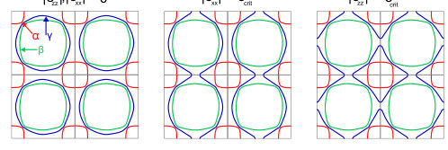
<figcaption class="paper-figure-caption"><b>Fig 1.</b> Figure 1. Schematic 2D Fermi surface of Sr2RuO4 under uniaxial stress. (a) Zero stress. (b) In-plane uniaxial stress |σxx| &gt; |σcrit,xx|. (c) Out-of-plane uniaxial stress |σzz| &gt; |σcrit,zz|.</figcaption>
</figure>
<figure class="paper-figure-card">
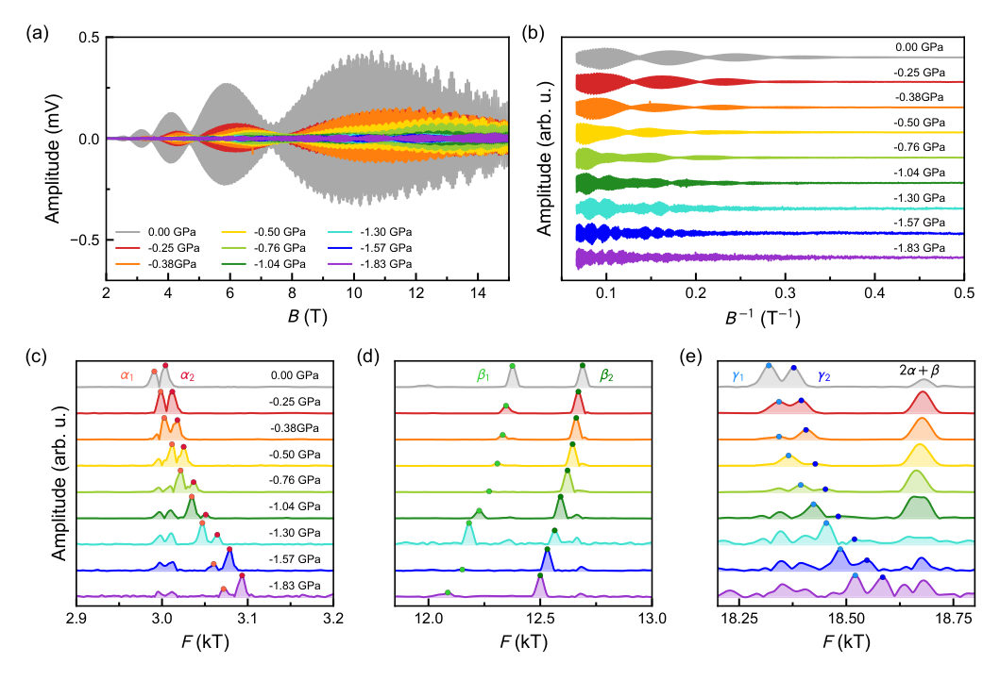
<figcaption class="paper-figure-caption"><b>Fig 2.</b> Figure 2. (a) Raw dHvA oscillations as a function of magnetic field at 90 mK (stress cell temperature) for a series of compressive stresses. (b) Same data as in (a) plotted versus inverse field; curves are vertically shifted for clarity. (c–e) Fourier spectra highlighting the α, β, γ, and 2α +β peaks under different stresses. FFTs were taken over the field range 3–15 T for α and 8–15 T for the other Fermi surface sheets.</figcaption>
</figure>
<figure class="paper-figure-card">

<figcaption class="paper-figure-caption"><b>Fig 3.</b> Figure 4. Comparison of the FFTs (8–15 T range) of quantum oscil- lations from magnetostriction (85 mK) and dHvA (125 mK) on the same sample. Before comparison, the strain FFT was multiplied by F2 (details are in the main text). Both spectra are then normalized to the α peak height. The inset shows the raw dilatometer signal (strain oscillations) as a function of field.</figcaption>
</figure>
<figure class="paper-figure-card">

<figcaption class="paper-figure-caption"><b>Fig 4.</b> Figure 3. Lifshitz-Kosevich effective mass analysis at 0 GPa (circles, solid lines) and −1 GPa (squares, dashed lines). Uncertainties on the effective masses from the fits are estimated to be about 2% for the α and β sheets, and about 5% for the γ sheet.</figcaption>
</figure>
<figure class="paper-figure-card">
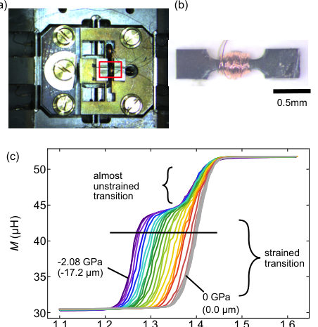
<figcaption class="paper-figure-caption"><b>Fig 5.</b> Figure 6. (a) Photo of a two-part carrier: the sample is mounted across a gap (red rectangle) with an excitation coil around its neck. (b) c-axis sample with a 48 turns pick-up coil. The sample was necked down in the center to reach larger stresses. (c) Mutual in- ductance against temperature in a series of compressive stresses. We show both the stress and, in brackets, the displacement, applied to the sample. (d) Comparison of Tc(σ) −Tc(σ = 0) against stress. Tc of the QO sample was determined by a threshold criterion, as indicated in panel (c), and compared to results from Ref. [16].</figcaption>
</figure>
</div>

<p><strong>Summary.</strong> This work uses dHvA measurements on Sr2RuO4 under uniaxial stress to map out the evolution of its electronic structure. By observing changes in Fermi surface areas and effective masses, the authors propose that charge transfer is the key mechanism driving the system toward a Lifshitz transition. The findings establish quantum oscillation measurements as a powerful tool for probing correlated materials under external strain.</p>
<p><strong>Why it may be interesting.</strong> While focused on condensed matter physics, the precise measurement of electronic structure evolution under external fields (stress) provides an excellent model for studying how external perturbations tune many-body ground states, which has parallels in controlling quantum phases relevant to AMO systems.</p>
<details>
<summary>Detailed structure</summary>
<p><strong>Main problem.</strong> To study how applying uniaxial stress affects the electronic structure and Fermi surface of the unconventional superconductor Sr2RuO4, particularly to reconcile discrepancies between predicted density of states changes and observed superconducting temperature suppression.</p>
<p><strong>Main result.</strong> The application of c-axis uniaxial stress causes measurable changes in the cross-sectional areas of different Fermi sheets ($\alpha$ increases, $eta$ decreases, $\gamma$ increases), suggesting charge transfer is driving the system toward a Lifshitz transition. Effective masses on all measured sheets are found to be slightly enhanced upon compression.</p>
<p><strong>Method.</strong> The study combines experimental De Haas-van Alphen (dHvA) quantum oscillation measurements under uniaxial stress with theoretical Density Functional Theory (DFT) calculations and magnetostriction measurements for comparison.</p>
<p><strong>Model / system.</strong> The system is the unconventional superconductor Sr2RuO4. The analysis focuses on how applying controlled c-axis uniaxial strain/stress ($\sigma_{zz}$) tunes the electronic band structure, leading to changes in Fermi surface topology and carrier distribution among different orbital character sheets ($\alpha, eta, \gamma$).</p>
<p><strong>Key observables.</strong> dHvA frequencies (for $\alpha, eta, \gamma$ sheets), cross-sectional areas of Fermi sheets, effective masses ($m^*$), superconducting critical temperature $T_c(\sigma)$, and strain/stress dependence ($\Delta F$ vs. $\sigma$).</p>
<p><strong>Important parameters / regimes.</strong> Uniaxial stress up to $-1.8$ GPa (experimentally) or higher (theoretically); the approach to a Lifshitz transition; effective mass enhancement factor ($\sim 10\%$).</p>
<p><strong>Assumptions / limitations.</strong> The analysis assumes that relative changes in effective masses are intrinsic and can be compared across different stress states, and that strain inhomogeneity issues can be controlled.</p>
<p><strong>Figures summary.</strong> Figures show raw/normalized quantum oscillations vs. magnetic field under various stresses; comparisons between dHvA frequency shifts ($\Delta F$) derived from experiment and DFT calculations; and plots detailing the evolution of Fermi surface areas and $T_c$ dependence on stress.</p>
<p><strong>Paper structure.</strong> The paper establishes the experimental feasibility of measuring dHvA effects under uniaxial stress. It then details how the measured changes in Fermi surface topology (sheet area changes) point to charge transfer mechanisms approaching a Van Hove singularity, contrasting this with other stress directions. Finally, it confirms quantitative agreement between these quantum oscillation results and DFT predictions.</p>
</details>
<details>
<summary>Abstract</summary>
<p>Uniaxial stress has now been widely used to study correlated electron materials. However, Fermi surface-resolved experimental data on the evolution of the electronic structure under piezoelectrically applied stress are sparse, with no reports of de Haas-van Alphen (dHvA) effects under uniaxial stress. Here we present dHvA measurements under $c$-axis uniaxial stress on the unconventional superconductor $\mathrm{Sr}_2\mathrm{RuO}_4$. This allows us to study the evolution of the electronic structure directly and to gain insight into the contradicting behavior of the predicted enhancement of the electronic density of states and the observed suppression of $T_\text{c}$. We are able to follow all Fermi surfaces for stress up to $-1.8$~GPa and find that the cross-sectional areas of the hole-like $α$ sheet increase and electron-like $β$ sheet decrease. At the same time, the area of the electron-like $γ$ sheet increases. Therefore, in contrast to in-plane uniaxial stress, charge transfer is the mechanism for approaching the electron-to-hole Lifshitz transition and the associated Van Hove singularity. Additionally, we find that the effective masses on all three Fermi sheets are slightly enhanced as the Lifshitz transition is approached. We compare the dHvA results with quantum oscillations in the magnetostriction and band structure calculations, and find good agreement. At a more general level, our findings show that quantum oscillation measurements under uniaxial stress, combined with band-structure calculations, offer a promising new route for studying quantum materials.</p>
</details>
<p><sub><a href="#top">↑ back to top</a></sub></p>

<p><a id="paper-2607.00210"></a></p>
<h3 id="classification-and-exact-local-masking-in-finite-field-clifford-dual-unitary-circuits"><a href="http://arxiv.org/abs/2607.00210v1">Classification and Exact Local Masking in Finite-Field Clifford Dual-Unitary Circuits</a></h3>
<p><strong>Authors:</strong> Basanta R Pahari<br>
<strong>Type:</strong> theory · <strong>Category:</strong> quantum information and computing · <strong>PDF:</strong> <a href="https://arxiv.org/pdf/2607.00210v1">https://arxiv.org/pdf/2607.00210v1</a><br>
<strong>Analysis basis:</strong> full PDF text, analyzed in chunks
<strong>Topic relevance:</strong> <code>entanglement &amp; information structure</code> <strong>2/5</strong></p>
<div class="figure-strip-hint">↔ Scroll figures horizontally</div>
<div class="paper-figures-scroll">
<figure class="paper-figure-card">

<figcaption class="paper-figure-caption"><b>Fig 1.</b> Low-resolution page preview, page 2</figcaption>
</figure>
<figure class="paper-figure-card">

<figcaption class="paper-figure-caption"><b>Fig 2.</b> Low-resolution page preview, page 3</figcaption>
</figure>
<figure class="paper-figure-card">

<figcaption class="paper-figure-caption"><b>Fig 3.</b> Low-resolution page preview, page 4</figcaption>
</figure>
<figure class="paper-figure-card">

<figcaption class="paper-figure-caption"><b>Fig 4.</b> Low-resolution page preview, page 5</figcaption>
</figure>
<figure class="paper-figure-card">
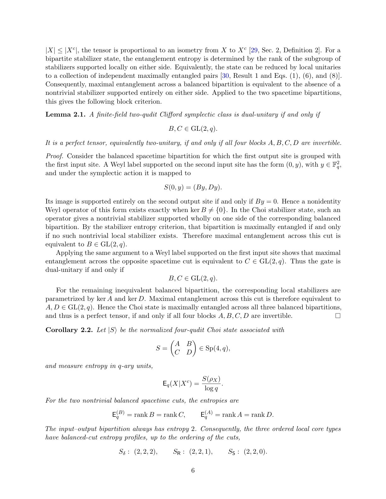
<figcaption class="paper-figure-caption"><b>Fig 5.</b> Low-resolution page preview, page 6</figcaption>
</figure>
</div>

<p><strong>Summary.</strong> This theoretical work classifies complex two-qudit Clifford circuits over finite fields and derives precise formulas for local masking distances. It proves that short quantum messages can be perfectly hidden from partial output measurements while remaining fully recoverable from the whole system. This advances the understanding of information security in quantum computation architectures.</p>
<p><strong>Why it may be interesting.</strong> The rigorous mathematical framework connecting finite field algebra ($   ext{Sp}(4, q)$) to fundamental quantum information tasks like perfect data hiding provides deep insights into the structure of quantum gates.</p>
<details>
<summary>Detailed structure</summary>
<p><strong>Main problem.</strong> The paper classifies two-qudit finite-field Clifford dual-unitary gates and applies this classification to determine exact local masking and operator transport properties in homogeneous brickwork circuits.</p>
<p><strong>Main result.</strong> It establishes specific, quantifiable masking laws ($d_1(t), d_2(t)$) showing that short quantum messages can be perfectly hidden from small output subsystems while remaining fully recoverable from the total output.</p>
<p><strong>Method.</strong> The analysis uses algebraic techniques involving symplectic groups $    ext{Sp}(4, q)$, classifying gates based on determinants ($\delta$) and relating them to geometric structures like MDS configurations and cross-ratios.</p>
<p><strong>Model / system.</strong> The system is modeled by Clifford dual-unitary circuits operating over finite fields $\mathbb{F}_q$ on qudits. The dynamics are analyzed using symplectic matrix representations within the group $    ext{Sp}(4, q)$.</p>
<p><strong>Key observables.</strong> Local masking distances ($d_1(t), d_2(t)$), entanglement entropy profiles, and algebraic codimensions of transport phases.</p>
<p><strong>Important parameters / regimes.</strong> The finite field size $q$, the circuit depth $t$, and the determinant parameter $\delta$.</p>
<p><strong>Assumptions / limitations.</strong> The analysis assumes specific structures for homogeneous repetition and focuses on exact local masking (state-independent reduction), distinguishing it from approximate indistinguishability.</p>
<p><strong>Figures summary.</strong> Figures/tables summarize phase counts, leakage vs. perturbation strength ($\epsilon$), and recovery fidelity versus Pauli noise probability ($p$).</p>
<p><strong>Paper structure.</strong> The paper proceeds by classifying the dual-unitary locus into $q$ core types (perfect, rank-one, SWAP), then analyzing how homogeneous repetition separates these cores into five distinct transport phases with varying algebraic codimensions. Finally, it derives explicit masking laws and tests them numerically for small $q$.</p>
</details>
<details>
<summary>Abstract</summary>
<p>We classify two-qudit finite-field Clifford dual-unitary gates and apply the classification to exact local masking and operator transport in homogeneous brickwork circuits. Under ordered one-qudit Clifford equivalence, the dual-unitary locus contains $q-2$ perfect-tensor cores, one rank-one core, and one SWAP core. The perfect cores are indexed by \[ δ=\det B=\det C, \] and are related to the ordered cross-ratio $λ$ of the associated $[4,2,3]_q$ MDS configuration through \[ λ=\fracδ{δ-1}. \] Homogeneous repetition separates these cores into five transport phases whose algebraic codimensions in $\operatorname{Sp}(4,q)$ are $0,1,2,3,4$.   The one-site Weyl edge channels determine exact local-masking distances. Perfect-tensor circuits attain \[ d_1(t)=4t, \qquad d_2(t)=4t-2, \] whereas delayed erasers satisfy \[ d_1(t)=4t-2, \qquad d_2(t)=4t-4 \] for $t\geq 2$. Consequently, sufficiently short quantum messages are completely hidden from every one- or two-qudit output subsystem, even when the input is entangled with a reference, while remaining exactly recoverable from the full output.   For $q=3$, we construct an explicit perfect-tensor Clifford gate from two inverse SUM gates. Exhaustive Weyl-support searches for $t=1,2,3$ reproduce the predicted masking distances, and a one-period Choi-channel calculation for a four-qutrit periodic circuit gives numerical residual leakage below $2\times 10^{-16}$. Under the coherent perturbation considered here, local leakage is linear in the perturbation strength, whereas the infidelity of recovery using the ideal inverse is quadratic near the perfect point.</p>
</details>
<p><sub><a href="#top">↑ back to top</a></sub></p>

<p><a id="paper-2607.00106"></a></p>
<h3 id="monte-carlo-reconstruction-of-symmetry-twisted-partition-function-ratios-the-critical-3d-ising"><a href="http://arxiv.org/abs/2607.00106v1">Monte Carlo reconstruction of symmetry-twisted partition function ratios: the critical 3D Ising</a></h3>
<p><strong>Authors:</strong> José Matos<br>
<strong>Type:</strong> theory · <strong>Category:</strong> statistical mechanics · <strong>PDF:</strong> <a href="https://arxiv.org/pdf/2607.00106v1">https://arxiv.org/pdf/2607.00106v1</a><br>
<strong>Analysis basis:</strong> full PDF text, analyzed in chunks
<strong>Topic relevance:</strong> <code>Keldysh / 2PI / non-Gaussian methods</code> <strong>1/5</strong> · <code>analog quantum simulation</code> <strong>1/5</strong> · <code>driven-dissipative phase transition</code> <strong>1/5</strong> · <code>entanglement &amp; information structure</code> <strong>1/5</strong> · <code>methods for driven-dissipative</code> <strong>1/5</strong> · <code>non-equilibrium dynamics</code> <strong>1/5</strong> · <code>non-equilibrium universality</code> <strong>1/5</strong></p>
<div class="figure-strip-hint">↔ Scroll figures horizontally</div>
<div class="paper-figures-scroll">
<figure class="paper-figure-card">

<figcaption class="paper-figure-caption"><b>Fig 1.</b> Figure 1. Two-dimensional benchmark of the flat histogram estimator. The dimensionless differ- ence Lz∆fZ2(L, Lz) is plotted against q = L/Lz for several transverse sizes L. The dashed line is the conformal result Lz∆fZ2 →π/4 at q, Lz →∞. The black dotted curve is the exact Ising torus result from the Jacobi-theta representation of the Virasoro characters [23]. Dashed curves are cubic interpolations in q at fixed L. The gray band marks the large-q window used below, to study finite-L effects. The deviations at small Lz/large-q are the lattice and finite-volume corrections discussed in the text.</figcaption>
</figure>
<figure class="paper-figure-card">

<figcaption class="paper-figure-caption"><b>Fig 2.</b> Figure 2. Finite-q corrections in the two-dimensional benchmark. The plot shows Lz∆fZ2(L, Lz)− π/4 versus q = L/Lz. The dashed curves are the leading large-q and small-q exponential approxi- mations. The exponential regime is visible only after the small-Lz lattice corrections are controlled.</figcaption>
</figure>
<figure class="paper-figure-card">

<figcaption class="paper-figure-caption"><b>Fig 3.</b> Figure 3. Large-q extrapolation at fixed Lz. For each q ∈[16, 100], the interpolation is evaluated and plotted versus Lz, as a single data set. This range makes exponential finite-q corrections negligible, as indicated by fig. 2. Raw data at aspect ratios with at least four values of Lz are also shown. The convergence from q = 4 to q = 8 and the stability at q ≳16 indicate that the interpolation is in the asymptotic regime.</figcaption>
</figure>
<figure class="paper-figure-card">
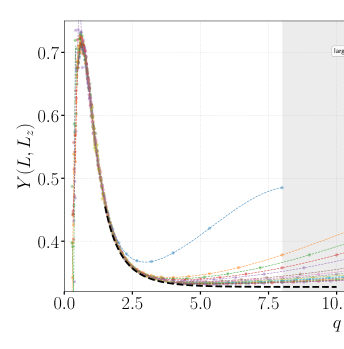
<figcaption class="paper-figure-caption"><b>Fig 4.</b> Figure 4. Raw finite-volume data for the three-dimensional slab at β = βc = 0.221654626(5). The plot shows Y (L, Lz) = L2 z∆fZ2(L, Lz) versus q = L/Lz for several transverse sizes L. Dashed curves are cubic interpolations in q at fixed L. The dashed black line is the infinite volume extrapolation. The gray band marks the large-q window used for the fixed-Lz diagnostic in fig. 5. Unlike the two dimensional case, there is no clear plateau.</figcaption>
</figure>
<figure class="paper-figure-card">

<figcaption class="paper-figure-caption"><b>Fig 5.</b> Figure 5. Large-q evaluation of the three-dimensional slab data at fixed Lz. For each Lz, the interpolation is evaluated at q = L/Lz ∈[8, 16], where finite-q corrections are not visible within the statistical precision. The values are plotted versus Lz and show the finite-Lz approach to the slab Casimir amplitude. Raw data at fixed aspect ratios with several Lz values are also shown. A free power-law fit gives an effective exponent near 2.5; the second fit includes terms proportional to L−(∆T ′−3) z , L−(∆ϵ′−3) z , and L−2 z . The uncertainties quoted in the fit labels are formal errors from the fit covariance matrix only; they do not include correlations, interpolation effects, or the...</figcaption>
</figure>
</div>

<p><strong>Summary.</strong> This paper introduces a powerful Monte Carlo technique to calculate free energy differences between distinct global sectors in lattice field theories. Applied to the 3D Ising model, it yields an independent measurement of the symmetry-twisted Casimir difference ($\Delta Z_2$). This method provides a robust tool for probing universal CFT data by analyzing finite-size effects across different geometric limits.</p>
<p><strong>Why it may be interesting.</strong> While focused on classical statistical mechanics, the use of advanced Monte Carlo techniques (flat histograms) and connections to CFT/spectral analysis are highly relevant for understanding quantum many-body systems where finite-size effects and boundary conditions dictate low-energy physics.</p>
<details>
<summary>Detailed structure</summary>
<p><strong>Main problem.</strong> The primary goal is to estimate partition function ratios between distinct global sectors of a lattice theory, specifically focusing on symmetry-twisted observables.</p>
<p><strong>Main result.</strong> The authors directly calculate the symmetry-twisted thermodynamic Casimir difference ($\Delta Z_2 = 0.327(2)$) for the critical 3D Ising model without needing lattice derivatives or bulk subtractions.</p>
<p><strong>Method.</strong> A Monte Carlo strategy is employed by enlarging the configuration space to sample an interpolating family between the desired sectors, using flat histogram methods to reconstruct the free energy difference.</p>
<p><strong>Model / system.</strong> The study focuses on the three-dimensional Ising model simulated on a slab geometry ($R^2 	imes S^1_{L_z}$) at its bulk critical point. The comparison is made between the standard periodic sector and the $\mathbb{Z}_2$-twisted antiperiodic sector.</p>
<p><strong>Key observables.</strong> Symmetry-twisted thermodynamic Casimir difference ($\Delta Z_2$), sector free energy difference ($\Delta F_{Z_2}$), and finite-size gap parameters ($\kappa_\sigma$).</p>
<p><strong>Important parameters / regimes.</strong> The aspect ratio $q = L/L_z$, the lattice size ($L, L_z$), and the coupling variable $J$ used for interpolation.</p>
<p><strong>Assumptions / limitations.</strong> The analysis relies on large-volume and aspect ratio extrapolations to extract universal continuum limits. The method assumes that sector differences allow access to CFT compactification data.</p>
<p><strong>Figures summary.</strong> Figures illustrate benchmarks (e.g., 2D case approaching $\pi/4$) and the convergence of observables ($\Delta Z_2$ and gap parameters) as system sizes are taken to their thermodynamic limits via various extrapolation ansätze.</p>
<p><strong>Paper structure.</strong> The paper develops a general Monte Carlo method for sector ratio estimation, applies it specifically to the 3D Ising model on a slab geometry, analyzes the large-$q$ limit to find $\Delta Z_2$, and then examines the small-$q$ channel to determine spectral gaps ($\kappa_\sigma$).</p>
</details>
<details>
<summary>Abstract</summary>
<p>We introduce a Monte Carlo strategy for directly estimating partition function ratios between distinct global sectors of a lattice theory. It enlarges the configuration space to sample an interpolating family whose endpoints are the desired sectors, and uses flat histogram methods to reconstruct the corresponding free energy difference. Although the construction is more general, we focus here on the three-dimensional Ising model on the slab $\mathbb{R}^{2}\times S^{1}_{L_{z}}$ at the bulk critical point, comparing the untwisted periodic sector with the $\mathbb{Z}_{2}$-twisted antiperiodic sector. A large-volume and aspect ratio extrapolation gives the symmetry-twisted thermodynamic Casimir difference $Δ_{\mathbb{Z}_{2}}=0.327(2)$ directly, without lattice derivatives or bulk subtractions. This provides an independent twisted sector probe of tensions observed in periodic sector thermodynamic Casimir observables. More generally, the method gives direct but selective numerical access to CFT compactification data, including estimates of the effective thermal screening scale and the $\mathbb{Z}_{2}$-odd sector energy gap on $T^{2}$.</p>
</details>
<p><sub><a href="#top">↑ back to top</a></sub></p>

<p><a id="paper-2607.00463"></a></p>
<h3 id="bridging-quantum-mechanics-and-nonlinear-optics-in-raman-scattering"><a href="http://arxiv.org/abs/2607.00463v1">Bridging quantum mechanics and nonlinear optics in Raman scattering</a></h3>
<p><strong>Authors:</strong> Naoki Fukutake, Hideaki Kano<br>
<strong>Type:</strong> theory · <strong>Category:</strong> other · <strong>PDF:</strong> <a href="https://arxiv.org/pdf/2607.00463v1">https://arxiv.org/pdf/2607.00463v1</a><br>
<strong>Analysis basis:</strong> full PDF text, analyzed in chunks
<strong>Topic relevance:</strong> <code>Keldysh / 2PI / non-Gaussian methods</code> <strong>1/5</strong> · <code>correlated / nonlocal dissipation</code> <strong>1/5</strong> · <code>driven-dissipative phase transition</code> <strong>1/5</strong> · <code>methods for driven-dissipative</code> <strong>1/5</strong></p>
<div class="figure-strip-hint">↔ Scroll figures horizontally</div>
<div class="paper-figures-scroll">
<figure class="paper-figure-card">

<figcaption class="paper-figure-caption"><b>Fig 1.</b> Fig. 1. Two types of processes involved in KHD theory: ① (rotating term) a process that passes through an intermediate state where one incident photon is absorbed, and ② (counter-rotating term) a process that passes through an intermediate state where one scattered photon is emitted.</figcaption>
</figure>
<figure class="paper-figure-card">
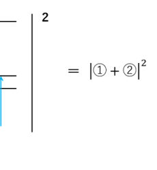
<figcaption class="paper-figure-caption"><b>Fig 2.</b> Figure 1 describes the first term (rotating term) ① and the second term (counter- rotating term) ② in the square of the modulus in Eq. (1). The first term is much larger than the second term. For the later discussion (DISCUSSION A), we expand the square of the modulus, where Eq. (1) is decomposed into four terms, i.e., a large term (𝑇1), two small terms (cross terms 𝑇2 and 𝑇3), and a negligible term (𝑇4), as presented below.</figcaption>
</figure>
<figure class="paper-figure-card">

<figcaption class="paper-figure-caption"><b>Fig 3.</b> Fig. 2. Double-sided Feynman diagrams and energy level diagrams describing L1–L4 in sRL and G1–G4 in sRG. Dotted arrows mean the vacuum fields, solid arrows represent the pump fields, and double-line arrows denote the signal field. On the bra side (right side) in double-sided Feynman diagram, the arrows indicate the negative-frequency light going in and out of the target molecules, which corresponds to the positive-frequency light going out and in. Although the signal field is depicted in our diagram style to show the final state of molecules, the arrow for the signal field is not necessary to calculate the nonlinear susceptibility. Also in the energy level diagram, the corresponding arrows...</figcaption>
</figure>
<figure class="paper-figure-card">
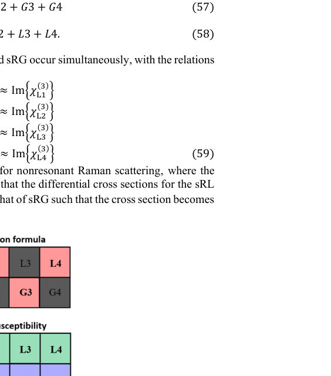
<figcaption class="paper-figure-caption"><b>Fig 4.</b> Fig. 3. A relationship between the cross sections. (a) 𝜎KHD/𝛺 derived from KHD dispersion formula. (b) 𝜎sRG/𝛺 and 𝜎sRL/𝛺 derived from nonlinear optical susceptibility approach.</figcaption>
</figure>
<figure class="paper-figure-card">

<figcaption class="paper-figure-caption"><b>Fig 5.</b> Fig. 4. Double-sided Feynman diagrams and energy level diagrams describing G5–G8 in sRG and L5–L8 in sRL.</figcaption>
</figure>
</div>

<p><strong>Summary.</strong> The paper develops a unified theory for spontaneous Raman scattering by bridging quantum mechanics and nonlinear optics. It shows that calculating the process using advanced quantum field methods yields perfect analytical agreement with traditional susceptibility approaches, while also predicting a previously unrecognized 'spontaneous Raman loss' mechanism.</p>
<p><strong>Why it may be interesting.</strong> This work is highly relevant to AMO physics and quantum optics as it rigorously unifies two major theoretical descriptions of light-matter interaction—the microscopic quantum picture (KHD) and the macroscopic response theory ($\chi^{(3)}$)—while predicting new vacuum-seeded phenomena like sRL.</p>
<details>
<summary>Detailed structure</summary>
<p><strong>Main problem.</strong> To develop a theoretical framework that fundamentally bridges quantum mechanical and nonlinear optical approaches for spontaneous Raman scattering.</p>
<p><strong>Main result.</strong> The authors achieve perfect analytical agreement between the quantum mechanical description (including negative-frequency terms) and the macroscopic nonlinear susceptibility approach, predicting a novel phenomenon called 'spontaneous Raman loss' (sRL).</p>
<p><strong>Method.</strong> The study involves deriving the spontaneous Raman cross-section by calculating third-order nonlinear susceptibilities ($\chi^{(3)}$) using both traditional Kramers-Heisenberg-Dirac theory and an advanced quantum mechanical formalism incorporating vacuum field expectation values.</p>
<p><strong>Model / system.</strong> The system is molecular scattering undergoing Raman processes, involving vibrational quanta ($\omega_{vib}$), pump fields ($\omega_i$), and scattered photons ($\omega_s$). The analysis uses concepts from nonlinear optics and quantum electrodynamics applied to light-matter interaction.</p>
<p><strong>Key observables.</strong> Spontaneous Raman cross-section ($d\sigma/d\Omega$), spontaneous Raman gain (sRG) and loss (sRL) intensities, and the third-order nonlinear susceptibility ($\chi^{(3)}$).</p>
<p><strong>Important parameters / regimes.</strong> Molecular density ($N$), vacuum permittivity ($\epsilon_o$), and various frequency differences ($\omega_{eg}, \omega_{ev}$).</p>
<p><strong>Assumptions / limitations.</strong> The analysis assumes that unobservable terms (related to negative-frequency processes beyond the observable range) are physically forbidden in spontaneous scattering, allowing for a direct mapping between formalisms.</p>
<p><strong>Figures summary.</strong> Figure 1 illustrates the rotating and counter-rotating terms in KHD theory. Figure 2 details eight Feynman diagrams used to calculate $\chi_{	ext{sRL}}^{(3)}$ and $\chi_{	ext{sRG}}^{(3)}$. Table 1 maps observable/unobservable quantum mechanical terms to nonlinear susceptibility components.</p>
<p><strong>Paper structure.</strong> The paper progresses by first establishing the need for a unified theory, then calculating sRG and sRL using vacuum expectation values derived from $\chi^{(3)}$ (via Feynman diagrams), and finally demonstrating that an advanced negative-frequency-assisted quantum mechanical approach yields exact analytical agreement with the established nonlinear optical formalism.</p>
</details>
<details>
<summary>Abstract</summary>
<p>We present a theoretical framework for spontaneous Raman scattering that fundamentally bridges quantum-mechanical and nonlinear-optical approaches. By conceptualizing spontaneous Raman scattering as a stimulated Raman gain or loss event seeded by the quantum vacuum field, we rigorously derive the spontaneous Raman cross-section directly from the third-order nonlinear susceptibility. Crucially, this framework predicts the existence of a hitherto unrecognized phenomenon: "spontaneous Raman loss" (sRL), which acts as the vacuum-seeded counterpart to stimulated Raman loss, complementing traditional spontaneous Raman scattering (spontaneous Raman gain, sRG). Furthermore, we establish a rigorous connection to the traditional Kramers-Heisenberg-Dirac (KHD) theory, revealing that the spontaneous process is governed by interference before a detector between the signal field emitted from molecules and the vacuum field itself that stimulates the molecules. This insight uncovers a direct correspondence between the sRG susceptibility and the rotating/counter-rotating interference terms in the KHD formula. Ultimately, we extend the foundational KHD theory by incorporating previously unrecognized essential terms, achieving perfect analytical agreement between the quantum mechanical and nonlinear optical descriptions of Raman scattering.</p>
</details>
<p><sub><a href="#top">↑ back to top</a></sub></p>

<p><a id="paper-2607.01217"></a></p>
<h3 id="diverse-efficiency-of-observable-optimization-for-four-level-quantum-systems-with-higher-order-traps"><a href="http://arxiv.org/abs/2607.01217v1">Diverse efficiency of observable optimization for four-level quantum systems with higher-order traps</a></h3>
<p><strong>Authors:</strong> Alexander Pechen, Boris Volkov<br>
<strong>Type:</strong> theory · <strong>Category:</strong> other · <strong>PDF:</strong> <a href="https://arxiv.org/pdf/2607.01217v1">https://arxiv.org/pdf/2607.01217v1</a><br>
<strong>Analysis basis:</strong> full PDF text, analyzed in chunks
<strong>Topic relevance:</strong> <code>Frenkel-Kontorova</code> <strong>1/5</strong> · <code>analog quantum simulation</code> <strong>1/5</strong> · <code>methods for driven-dissipative</code> <strong>1/5</strong> · <code>quantum measurements</code> <strong>1/5</strong></p>
<div class="figure-strip-hint">↔ Scroll figures horizontally</div>
<div class="paper-figures-scroll">
<figure class="paper-figure-card">

<figcaption class="paper-figure-caption"><b>Fig 1.</b> Figure 1. Left: Energy level structure of an example class of four-level quantum systems with the free Hamiltonian H0 = diag(a, b, b, c) and with allowed transitions |1⟩↔|2⟩, |1⟩↔|3⟩, |2⟩↔|3⟩, |2⟩↔|4⟩, and |3⟩↔|4⟩. We denote this system as a V −V since it has a couple of V -connected triples of levels: One triple is level |1⟩connected with two levels |2⟩and |3⟩, an another triple is level |4⟩connected with the same two levels; ′′−′′ indicates that both upper levels |2⟩and |3⟩are connected. Right: Energy level structure of a four-level quantum system with the chain interaction.</figcaption>
</figure>
<figure class="paper-figure-card">
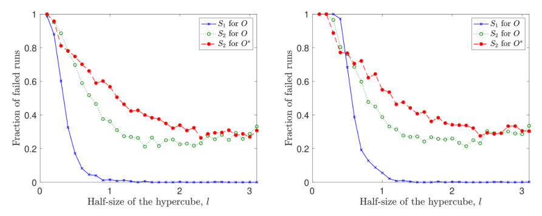
<figcaption class="paper-figure-caption"><b>Fig 2.</b> Figure 2. Fraction of failed runs for l = 0.1, 0.2, 0.3, . . . , 3.1 for the system S1 (blue solid line) and S2 (green dotted and red dashed lines for the two target observables O and O∗, respectively). Left: Unconstrained optimization using GRAPE. Right: Constrained optimization using GPM. The target observable is O = diag(1, −6, −6, 0) for S1 and S2, and also O∗= diag(1, 6, −6, 0) for S2. The initial state is ρ0 = |4⟩⟨4|. The parameters are T = 20, M = 100, Kstop = 2000, ε = 0.02, and Ierr = 10−3. For each point L = 500 runs are performed. The behaviour of the fraction of failed runs for both systems in essentially different.</figcaption>
</figure>
<figure class="paper-figure-card">
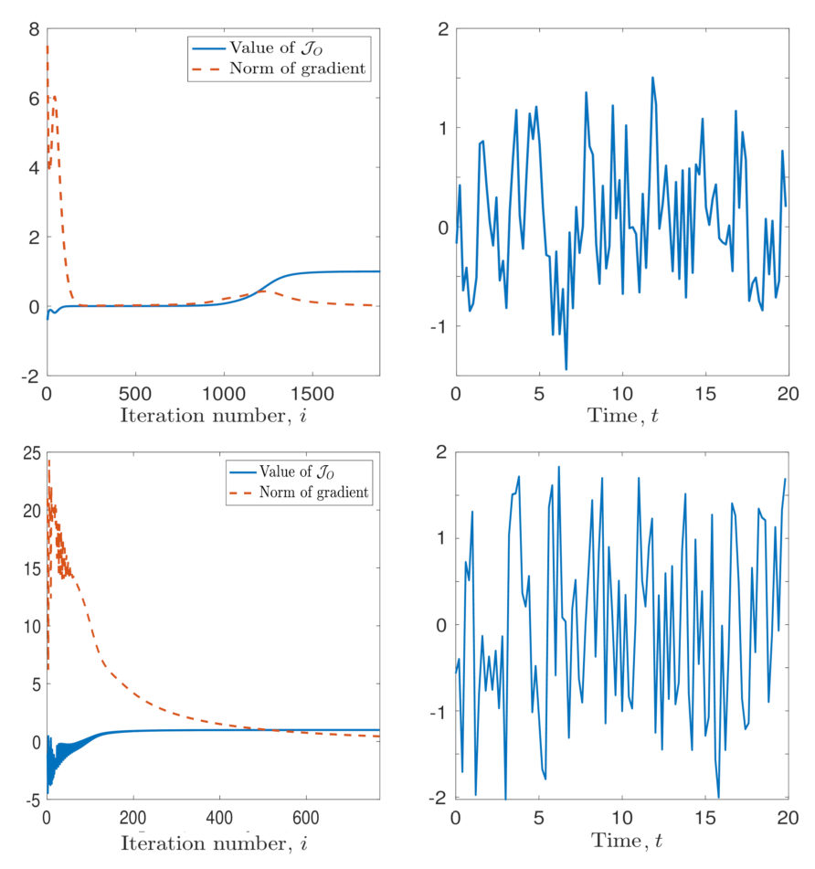
<figcaption class="paper-figure-caption"><b>Fig 3.</b> Figure 3. An example of the optimization results with target observable O. Upper row for the system S1 and l = 1. Bottom row for the system S2 and l = 2. Other parameters are the same as for Fig. 2. Left: behavior of the objective value and norm of the gradient vs iteration number. Totally 1880 iterations were required for S1 and 770 for S2. Right: The obtained optimized controls vs time.</figcaption>
</figure>
</div>

<p><strong>Summary.</strong> This paper investigates the landscape of quantum control for four-level systems, proving that the zero-control point acts as a high-order trap. By comparing V-V and chain interaction models using GRAPE/GPM simulations, the authors reveal that the optimization efficiency varies drastically depending on the system's underlying Hamiltonian structure.</p>
<p><strong>Why it may be interesting.</strong> This work directly addresses the practical limitations of optimal control theory by quantifying how the underlying structure of the Hamiltonian dictates the difficulty and efficiency of finding controls, which is crucial for designing robust quantum protocols in AMO settings.</p>
<details>
<summary>Detailed structure</summary>
<p><strong>Main problem.</strong> The study analyzes the quantum control landscape for optimizing a specific observable by finding optimal time-dependent controls $f(t)$ in four-level quantum systems.</p>
<p><strong>Main result.</strong> The null control ($f \equiv 0$) is proven to be a five-order trap, but the optimization efficiency shows diverse behavior: a sharp increase for V-V systems versus a slower increase for chain interaction systems.</p>
<p><strong>Method.</strong> The analysis combines analytical investigation of the objective functional's Taylor expansion at the null control with numerical simulations using GRAPE (unconstrained) and GPM (constrained).</p>
<p><strong>Model / system.</strong> The system involves four-level quantum dynamics governed by a Hamiltonian $H = H_0 + f(t)V$. Two specific models are compared: a V-V system and an anharmonic/chain interaction system.</p>
<p><strong>Key observables.</strong> Optimization efficiency (fraction of successful runs), the objective functional value, and the order of the trap determined by Taylor expansion coefficients.</p>
<p><strong>Important parameters / regimes.</strong> The distance parameter $l$ from the null control; time duration $T=20$; number of discretization points $M=100$.</p>
<p><strong>Assumptions / limitations.</strong> The analysis assumes controllability of the system and relies on structural assumptions regarding the Hamiltonian for proving trap orders.</p>
<p><strong>Figures summary.</strong> Figures illustrate energy level structures (V-V vs. chain), and subsequent figures show optimization efficiency (fraction of failed runs) versus distance $l$ for both V-V and chain systems, comparing GRAPE and GPM results.</p>
<p><strong>Paper structure.</strong> The paper progresses from defining the quantum control problem and characterizing traps analytically to performing numerical comparisons between unconstrained (GRAPE) and constrained (GPM) optimization methods on two distinct physical models.</p>
</details>
<details>
<summary>Abstract</summary>
<p>In this work, we perform an analytical and numerical analysis of quantum landscapes for controlling special four-level quantum systems for which we prove that the null control is a five-order trap: a $V-V$ system and an anharmonic system. As a control goal, an observable optimization is considered. The rigorous theoretical analysis is followed by the numerical experiments based on the GRadient Ascent Pulse Engineering (GRAPE) algorithm and Gradient Projection Method (GPM), performed to investigate the behavior of the efficiency of optimization for unconstrained (using GRAPE) and constrained (using GPM) controls. As the main result, we observe an interesting phenomenon with a diverse behavior of the optimization efficiency depending on the system Hamiltonian -- sharp increase of the optimization efficiency up to 100% at certain distance from the null control for a V-V system, while much slower and less significant increase (and even small decrease) for a system with the chain interaction. This sharp difference might be related with the fine structure of the subspace of controls where second derivative of the objective functional is zero.</p>
</details>
<p><sub><a href="#top">↑ back to top</a></sub></p>

<p><a id="paper-2607.00599"></a></p>
<h3 id="entropy-driven-structural-phase-transition-in-nbmath776mathclmath777math-via-density-functional-theory-and-an-effective-model"><a href="http://arxiv.org/abs/2607.00599v1">Entropy-Driven Structural Phase Transition in Nb$_3$Cl$_8$ via Density Functional Theory and an Effective Model</a></h3>
<p><strong>Authors:</strong> Chenjie Zhu, Shuai Zhang, Zhong Fang, Zhijun Wang, Quansheng Wu, Hongming Weng<br>
<strong>Type:</strong> theory · <strong>Category:</strong> strongly correlated electrons · <strong>PDF:</strong> <a href="https://arxiv.org/pdf/2607.00599v1">https://arxiv.org/pdf/2607.00599v1</a><br>
<strong>Analysis basis:</strong> full PDF text, analyzed in chunks
<strong>Topic relevance:</strong> <code>Keldysh / 2PI / non-Gaussian methods</code> <strong>1/5</strong> · <code>analog quantum simulation</code> <strong>1/5</strong> · <code>driven-dissipative phase transition</code> <strong>1/5</strong> · <code>exotic spin models in light-matter</code> <strong>1/5</strong></p>
<div class="figure-strip-hint">↔ Scroll figures horizontally</div>
<div class="paper-figures-scroll">
<figure class="paper-figure-card">
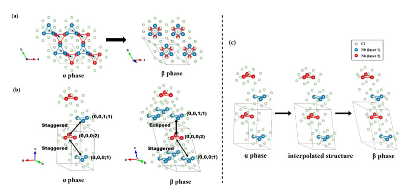
<figcaption class="paper-figure-caption"><b>Fig 1.</b> FIG. 1. Crystal structures of Nb3Cl8 in the α and β phases and the interpolation path between them. Light green spheres denote Cl atoms, while blue and red spheres denote Nb atoms in adjacent layers. (a) Top view of the interlayer slip from the staggered α stacking to the partially eclipsed β stacking. The black arrow indicates the dominant structural displacement across the transition. (b) Side view of the corresponding stacking sequences. Here (R, site) labels the lattice translation R and the cluster site within the unit cell. The α phase has uniform staggered AA′ stacking, whereas the β phase adopts an AA′BB′CC′ stacking sequence[8], alternating between staggered and eclipsed interlayer...</figcaption>
</figure>
<figure class="paper-figure-card">
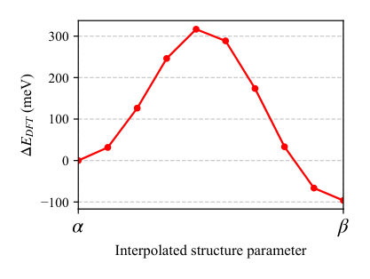
<figcaption class="paper-figure-caption"><b>Fig 2.</b> FIG. 2. DFT total-energy difference per unit cell, ∆EDFT = EDFT −Eα DFT, versus the interpolated structural parameter between the α and β phases. The α-phase energy is taken as the reference.</figcaption>
</figure>
<figure class="paper-figure-card">
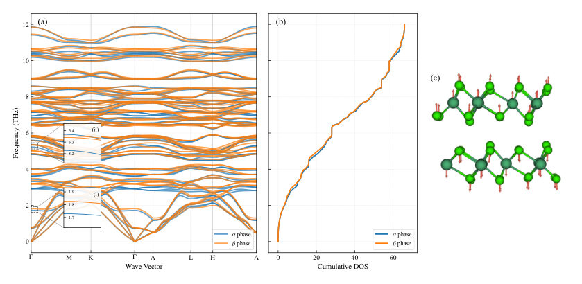
<figcaption class="paper-figure-caption"><b>Fig 3.</b> FIG. 3. (a) Phonon dispersions of the α phase (blue) and β phase (orange) of Nb3Cl8, plotted along the high-symmetry path of the α phase. Inset (i) highlights the Γ-point Layer-Breathing Mode, with frequencies of 1.729 THz in the α phase and 1.826 THz in the β phase. Inset (ii) highlights the Γ-point modes near 5.3 THz for comparison with experimentally observed phonon modes. In the α phase, the A1g and A2u modes are at 5.228 and 5.366 THz, respectively; in the β phase, the A2u and A1g modes are at 5.341 and 5.354 THz, respectively. (b) Corresponding cumulative phonon density of states. The α-phase curve is shifted slightly toward lower frequencies, indicating an overall phonon softening...</figcaption>
</figure>
<figure class="paper-figure-card">
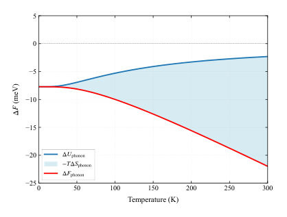
<figcaption class="paper-figure-caption"><b>Fig 4.</b> FIG. 4. Phonon Helmholtz free-energy difference per unit cell, ∆Fphonon = F α phonon −F β phonon, versus temperature. The decomposition includes the phonon internal-energy dif- ference ∆Uphonon (blue line) and the entropy contribution −T∆Sphonon (blue area). At T = 0, ∆Uphonon reduces to the phonon zero-point-energy difference ∆Ezpe = Eα zpe −Eβ zpe.</figcaption>
</figure>
<figure class="paper-figure-card">
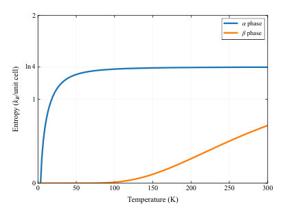
<figcaption class="paper-figure-caption"><b>Fig 5.</b> FIG. 5. Spin entropy per unit cell of the effective Heisen- berg model versus temperature. For the α phase (blue), the entropy is obtained from the HTSE using the P[4, 6] Pad´e ap- proximant. For the β phase (orange), the entropy is obtained from the isolated-dimer model.</figcaption>
</figure>
</div>

<p><strong>Summary.</strong> The authors investigate the structural phase transition in $   ext{Nb}_3   ext{Cl}_8$ by constructing a total free-energy functional that couples DFT results with an extended Hubbard model. They demonstrate that this transition is governed by a delicate balance between phonon entropy (favoring the high-T $\alpha$ phase) and spin entropy/electronic energy gains (favoring the low-T $eta$ phase). The framework successfully predicts how external pressure can suppress this transition, potentially stabilizing the QSL candidate regime.</p>
<p><strong>Why it may be interesting.</strong> This work provides a comprehensive theoretical framework for understanding structural transitions in Mott insulators where lattice dynamics, electronic correlations, and magnetic ordering are intrinsically coupled, which is highly relevant to correlated materials physics.</p>
<details>
<summary>Detailed structure</summary>
<p><strong>Main problem.</strong> To determine the microscopic origin of a first-order structural phase transition in $ ext{Nb}_3   ext{Cl}_8$ that suppresses its potential quantum spin liquid (QSL) state.</p>
<p><strong>Main result.</strong> The transition is jointly driven by phonon and spin entropy, with high-temperature stability favoring the $\alpha$ phase due to entropic gains, while low-temperature favorability of the $eta$ phase arises from interlayer dimerization and spin singlet formation.</p>
<p><strong>Method.</strong> A unified free-energy framework combining first-principles DFT calculations with an extended Hubbard model and phonon theory is employed to analyze lattice, electronic, and magnetic contributions to the total free energy.</p>
<p><strong>Model / system.</strong> The system is $ ext{Nb}_3   ext{Cl}_8$, modeled using an effective Hamiltonian derived from a cluster-centered $2a_1$ orbital basis. The analysis incorporates terms for electron correlation (Hubbard model) and lattice vibrations (phonon free energy).</p>
<p><strong>Key observables.</strong> Helmholtz free energies ($ ext{F}<em ext_spin="ext{spin">{    ext{tot}}$), phonon frequencies, spin entropy changes ($S</em>$), and generalized enthalpy under uniaxial stress ($\Delta H$).}</p>
<p><strong>Important parameters / regimes.</strong> Transition temperature ($T_c \approx 113 	ext{ K}$), critical pressure ($P_c \approx 2.6 	ext{ GPa}$), and Hubbard parameters ($U, V, t$).</p>
<p><strong>Assumptions / limitations.</strong> The phonon calculation uses the harmonic approximation; the model requires a double-counting correction ($   ext{EDC}$) to reconcile DFT and correlated electron treatments.</p>
<p><strong>Figures summary.</strong> Figures illustrate phonon dispersions comparing $\alpha$ and $eta$ phases, and plots show the decomposition of free energy and enthalpy differences as functions of temperature and pressure.</p>
<p><strong>Paper structure.</strong> The paper systematically constructs a total free-energy functional by adding DFT energies, phonon contributions, and Hubbard model spin/correlation terms. It analyzes how entropy (phonon vs. spin) dictates phase stability across varying temperatures and external pressures.</p>
</details>
<details>
<summary>Abstract</summary>
<p>As a prototypical flat-band cluster Mott insulator on an effective triangular lattice, Nb$_3$Cl$_8$ is a potential candidate for hosting a quantum spin liquid (QSL) state. Nevertheless, a first-order structural phase transition around 90K transforms the high-temperature paramagnetic $α$ phase into the low-temperature nonmagnetic $β$ phase, suppressing the candidate QSL regime of the $α$ phase. To clarify the microscopic origin of this transition, we combine first-principles calculations with an extended Hubbard model to construct a unified free-energy framework. This framework reveals that the transition is jointly driven by phonon and spin entropy: the $α$ phase is stabilized by softer phonons and larger paramagnetic spin entropy, whereas the $β$ phase is favored by interlayer dimerization, which hardens the phonons and quenches the spin entropy through singlet formation. Furthermore, by evaluating the pressure-dependent generalized enthalpy, we provide a thermodynamic explanation for the suppression of the transition under c-axis uniaxial pressure, where stabilizing the $α$ phase may allow the candidate QSL regime of the $α$ phase to be explored at low temperatures.</p>
</details>
<p><sub><a href="#top">↑ back to top</a></sub></p>

<p><a id="paper-2607.00184"></a></p>
<h3 id="a-universal-time-of-arrival-signature-of-bose-einstein-condensation"><a href="http://arxiv.org/abs/2607.00184v1">A universal time-of-arrival signature of Bose--Einstein condensation</a></h3>
<p><strong>Authors:</strong> Mathieu Beau, Timothey Szczepanski<br>
<strong>Type:</strong> theory · <strong>Category:</strong> quantum gases · <strong>PDF:</strong> <a href="https://arxiv.org/pdf/2607.00184v1">https://arxiv.org/pdf/2607.00184v1</a><br>
<strong>Analysis basis:</strong> full PDF text, analyzed in chunks
<strong>Topic relevance:</strong> <code>Keldysh / 2PI / non-Gaussian methods</code> <strong>1/5</strong> · <code>analog quantum simulation</code> <strong>1/5</strong> · <code>non-equilibrium dynamics</code> <strong>1/5</strong></p>
<div class="figure-strip-hint">↔ Scroll figures horizontally</div>
<div class="paper-figures-scroll">
<figure class="paper-figure-card">

<figcaption class="paper-figure-caption"><b>Fig 1.</b> FIG. 1. Time-of-arrival statistics across the Bose–Einstein transition. (a) Mean arrival-time shift ⟨T ⟩−tc and (b) standard deviation ∆T , each normalized to its classical value at Tc, versus T/Tc. The dashed curves are the Maxwell–Boltzmann predictions, ⟨T ⟩cl −tc ∝T and ∆Tcl = g−1p</figcaption>
</figure>
<figure class="paper-figure-card">

<figcaption class="paper-figure-caption"><b>Fig 2.</b> FIG. 2. Observability and robustness of the TOA cusp. (a) Apparent one-sided slope ratio at the transition versus finite- difference temperature step ε. The sharp thermodynamic-limit curve approaches the universal value R∞≃2.5556 (dotted line), equal to the trapped-gas specific-heat ratio. The finite-N curves are computed from the exact discrete-level sum for 4He (m = 6.64 × 10−27 kg) in a harmonic trap (ωx, ωy, ωz) = 2π × (1000, 1000, 100) Hz, with N = 104, 105, 106 (geometric-mean frequency ¯ω = 2π × 464 Hz, Tc = 0.45, 0.97, 2.10 µK respectively). At finite N, the transition is rounded over a window δT/Tc ∼N −1/3; if ε is pushed below this width, the finite difference samples the smoothed...</figcaption>
</figure>
<figure class="paper-figure-card">

<figcaption class="paper-figure-caption"><b>Fig 3.</b> FIG. 3. One-sided slopes of the normalized mean arrival-time shift, ∂T/Tc  (⟨T ⟩−tc)/(⟨T ⟩−tc)cl(Tc)  , across the transition. The slope drops from 4 ζ(4)/ζ(3) ≃3.60 at T − c to R1 + TcR′(T + c ) ≃1.41 at T + c , a one-sided ratio R∞≃2.556 equal to the trapped-gas specific-heat ratio. The standard deviation ∆T shares the same ratio but a visually milder kink, being linear in σV rather than σ2 V .</figcaption>
</figure>
<figure class="paper-figure-card">
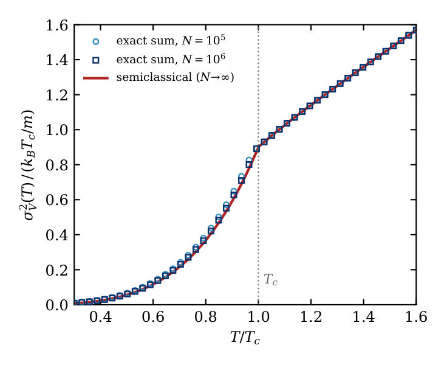
<figcaption class="paper-figure-caption"><b>Fig 4.</b> FIG. 4. Longitudinal velocity variance σ2 V (T) from the exact discrete-level sum [Eq. (56), open symbols] versus the semiclassical thermodynamic-limit form (solid), for 4He (m = 6.64 × 10−27 kg) in the harmonic trap (ωx, ωy, ωz) = 2π × (1000, 1000, 100) Hz (¯ω = 2π × 464 Hz), at N = 105 (Tc = 0.97 µK) and N = 106 (Tc = 2.10 µK). The two agree to &lt; 0.1% for T ≥Tc; the exact sum rounds the cusp over δT/Tc ∼N −1/3 and the below-Tc excess decreases with N.</figcaption>
</figure>
<figure class="paper-figure-card">
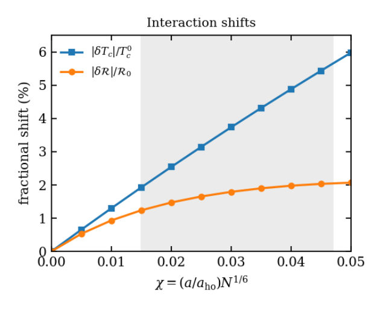
<figcaption class="paper-figure-caption"><b>Fig 5.</b> FIG. 5. Weak-interaction robustness from the HF–LDA calculation. The fractional shift of R stays at the percent level while Tc shifts several times more strongly.</figcaption>
</figure>
</div>

<p><strong>Summary.</strong> The authors theoretically predict that Bose-Einstein condensation imprints a universal cusp onto the time-of-arrival statistics of a trapped gas released into free fall. This characteristic ratio is shown to equal the specific-heat ratio of the ideal gas, providing a highly robust and measurable signature for BEC in cold atom experiments.</p>
<p><strong>Why it may be interesting.</strong> This work provides a clean, measurable dynamical signature of BEC that is robust against minor perturbations (like weak interactions) and depends only on fundamental thermodynamic ratios, making it an excellent diagnostic tool for ultracold atomic experiments.</p>
<details>
<summary>Detailed structure</summary>
<p><strong>Main problem.</strong> To demonstrate that Bose-Einstein condensation (BEC) generates a universal, measurable signature in the time-of-arrival (TOA) statistics of a trapped gas released into free fall.</p>
<p><strong>Main result.</strong> The one-sided slope ratio ($R_\infty$) characterizing the cusp in the TOA distribution is predicted to be universal ($\approx 2.556$), matching the specific-heat ratio of the ideal trapped gas, independent of trap parameters.</p>
<p><strong>Method.</strong> Semiclassical analysis of the time-of-arrival flux, involving expansions in a small parameter $\epsilon$ and separating contributions from the condensate and thermal cloud.</p>
<p><strong>Model / system.</strong> An ideal Bose gas confined in an anisotropic harmonic trap, released to free fall. The model is analyzed in the long time-of-flight (far-field) semiclassical limit.</p>
<p><strong>Key observables.</strong> The TOA distribution $\Pi(t)$, mean arrival time shift $\langle T 
angle - t_c$, standard deviation $\Delta T$, and the universal one-sided slope ratio $R_\infty$.</p>
<p><strong>Important parameters / regimes.</strong> Ideal gas limit, far-field regime ($\omega z t_c \gg 1$), finite atom number ($N$), and weak interaction strength ($\chi$).</p>
<p><strong>Assumptions / limitations.</strong> The analysis relies on the ideal gas model initially; interactions are treated perturbatively (Hartree-Fock) or neglected to establish the universal limit.</p>
<p><strong>Figures summary.</strong> Figures illustrate the development of $\langle T 
angle - t_c$ and $\Delta T$ showing a cusp, confirming $R_\infty \approx 2.556$, and demonstrate that finite-$N$ effects round this cusp while weak interactions cause only minor shifts.</p>
<p><strong>Paper structure.</strong> The paper develops the TOA distribution semiclassically, derives model-independent relations for $\langle T 
angle$ and $\Delta T$, calculates the universal ratio $R_\infty$ by comparing it to the specific heat ratio, and finally tests its robustness against finite atom numbers and weak interactions.</p>
</details>
<details>
<summary>Abstract</summary>
<p>We show that Bose--Einstein condensation produces a cusp in the time-of-arrival (TOA) statistics of a harmonically trapped gas released into free fall. In the semiclassical long time-of-flight regime, with $ε=σ_V/\sqrt{2gH}\ll1$, both the mean and standard deviation of the arrival time distribution, which are governed by the longitudinal velocity variance, remain continuous, but acquire a cusp whose one-sided slope ratio is universal within the ideal-gas far-field limit, $\mathcal{R}_\infty=2.5556\ldots$, and equals the trapped-gas specific-heat ratio $C(Tc^-)/C(Tc^+)$. Finite atom number rounds the cusp and weak interactions perturb it only weakly, leaving a measurable time-domain signature of condensation.</p>
</details>
<p><sub><a href="#top">↑ back to top</a></sub></p>

<p><a id="paper-2607.01052"></a></p>
<h3 id="breathing-mode-inducing-dynamical-pairing-in-kagome-materials"><a href="http://arxiv.org/abs/2607.01052v1">Breathing mode inducing dynamical pairing in Kagome materials</a></h3>
<p><strong>Authors:</strong> Debmalya Chakraborty, Anushree Datta, Jorge Cayao<br>
<strong>Type:</strong> theory · <strong>Category:</strong> strongly correlated electrons · <strong>PDF:</strong> <a href="https://arxiv.org/pdf/2607.01052v1">https://arxiv.org/pdf/2607.01052v1</a><br>
<strong>Analysis basis:</strong> full PDF text, analyzed in chunks
<strong>Topic relevance:</strong> <code>Keldysh / 2PI / non-Gaussian methods</code> <strong>1/5</strong> · <code>analog quantum simulation</code> <strong>1/5</strong> · <code>driven-dissipative phase transition</code> <strong>1/5</strong></p>
<div class="figure-strip-hint">↔ Scroll figures horizontally</div>
<div class="paper-figures-scroll">
<figure class="paper-figure-card">

<figcaption class="paper-figure-caption"><b>Fig 1.</b> FIG. 1. (a) Sketch of a pristine regular kagome lattice (yellow) made of corner-sharing triangles with sublattices A, B and C. (b) Kagome lattice under a breathing distortion (brown ar- rows), which originates the breathing mode. (c) First Bril- louin zone of the kagome lattice indicating the high sym- metry points and the path KΓMK (red dashed lines). (d,e) Schematic pair amplitude induced by the breathing mode as a function of the imaginary time τ (d) and complex frequency in iωn (e). The resulting dynamical pair at finite times and frequencies is depicted by the blueish filled circles inside the orange ellipse.</figcaption>
</figure>
<figure class="paper-figure-card">

<figcaption class="paper-figure-caption"><b>Fig 2.</b> FIG. 2. (a) Energy bands of the normal state Hamiltonian Eq. (2) for tb = ta (dashes lines) and tb = 0.2ta (solid lines) with µ = 0. (b) Self-consistent values of the superconducting order parameters ∆AA,BB,CC with varying µ for tb = 0.2ta.</figcaption>
</figure>
<figure class="paper-figure-card">
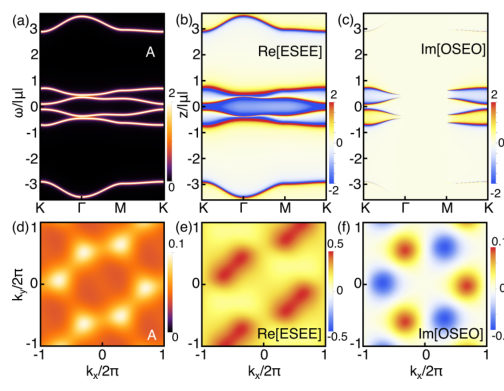
<figcaption class="paper-figure-caption"><b>Fig 3.</b> FIG. 3. (a-c) Spectral function, ESEE and OSEO pair am- plitudes as functions of frequency along high-symmetry paths under a finite breathing distortion ta ̸= tb. The spectral func- tion is plotted versus ω, with z →ω + iη, while the pair amplitudes is shown for z. (d-f) The same as in (a-c) but as a function of momenta at ω = 1 for the spectral function, while z = 1 for the pair amplitudes. Parameters: ∆AA = 0.66|µ|, ∆BB = 0, ∆CC = −0.66|µ|, µ = 1, tb = 0.2ta when not speci- fied.</figcaption>
</figure>
</div>

<p><strong>Summary.</strong> This work theoretically investigates how structural distortions, specifically the 'breathing mode,' induce unconventional odd-frequency Cooper pairs in Kagome superconductors. By classifying superconducting symmetries, the authors show that this structural modulation drives a dynamical pairing mechanism even when conventional $s$-wave superconductivity is present. This establishes breathing Kagome lattices as a platform for realizing exotic, time-nonlocal quantum correlations.</p>
<p><strong>Why it may be interesting.</strong> While focused on solid-state superconductivity, the concept of dynamical pairing driven by structural fluctuations (a form of coupling between lattice degrees of freedom and electronic correlations) is relevant for understanding emergent quantum phenomena in strongly correlated systems.</p>
<details>
<summary>Detailed structure</summary>
<p><strong>Main problem.</strong> To classify superconducting symmetries in Kagome superconductors and demonstrate the emergence of odd-frequency dynamical Cooper pairs driven by structural distortions.</p>
<p><strong>Main result.</strong> The breathing mode induces a specific type of odd-frequency, spin-singlet pairing ($   ext{OSEO}$ class) that can emerge even when the parent superconductivity is conventional $s$-wave.</p>
<p><strong>Method.</strong> Theoretical calculation involving the full classification of superconducting symmetries using anomalous Green's functions and solving the Bogoliubov de Gennes Hamiltonian self-consistently.</p>
<p><strong>Model / system.</strong> The system is based on Kagome materials, modeled with a normal state Hamiltonian that includes a structural modulation called the 'breathing mode,' which breaks inversion symmetry ($t_a 
eq t_b$).</p>
<p><strong>Key observables.</strong> Superconducting pair amplitudes symmetry (even/odd under frequency/spin), odd-frequency pairing signatures, and quasiparticle interference ($\delta
ho_a(q, \omega)$).</p>
<p><strong>Important parameters / regimes.</strong> The structural distortion parameter ($t_a - t_b$) is crucial; superconductivity exists in specific chemical potential ranges ($\mu$).</p>
<p><strong>Assumptions / limitations.</strong> The analysis initially considers the simplest onsite spin-singlet superconductivity using $\Delta_{AA}, \Delta_{BB}, \Delta_{CC}$ as independent order parameters.</p>
<p><strong>Figures summary.</strong> Figures illustrate band structures comparing pristine vs. distorted lattices, and show self-consistent superconducting order parameters ($\Delta_{\alpha\alpha'}$) dependence on chemical potential.</p>
<p><strong>Paper structure.</strong> The paper proceeds by classifying allowed pair symmetries based on symmetry constraints, demonstrating how the breathing mode opens gaps at Dirac points, leading to the emergence of odd-frequency pairing mechanisms.</p>
</details>
<details>
<summary>Abstract</summary>
<p>The breathing mode in Kagome materials is a structural modulation that breaks inversion symmetry and has been shown to be a crucial source for intriguing phases in the normal state. In this work, we carry out a full classification of superconducting symmetries in kagome superconductors and demonstrate the emergence of odd-frequency dynamical Cooper pairs entirely driven by the breathing mode. We then show that odd-frequency spin-singlet Cooper pairs can be realized by controlling the breathing mode in kagome lattices with conventional spin-singlet $s$-wave superconductivity. Since odd-frequency pairing is intrinsically nonlocal in time, our results put forward the breathing mode for designing dynamical Cooper pairs in kagome materials.</p>
</details>
<p><sub><a href="#top">↑ back to top</a></sub></p>

<p><a id="paper-2607.00892"></a></p>
<h3 id="non-self-averaging-topological-anderson-insulator"><a href="http://arxiv.org/abs/2607.00892v1">Non-self-averaging topological Anderson insulator</a></h3>
<p><strong>Authors:</strong> Zheng-Wei Zuo, Jun-Chong Liu<br>
<strong>Type:</strong> theory · <strong>Category:</strong> disordered systems and neural networks · <strong>PDF:</strong> <a href="https://arxiv.org/pdf/2607.00892v1">https://arxiv.org/pdf/2607.00892v1</a><br>
<strong>Analysis basis:</strong> full PDF text, analyzed in chunks
<strong>Topic relevance:</strong> <code>Keldysh / 2PI / non-Gaussian methods</code> <strong>1/5</strong> · <code>Kondo &amp; dissipative impurity</code> <strong>1/5</strong> · <code>analog quantum simulation</code> <strong>1/5</strong></p>
<div class="figure-strip-hint">↔ Scroll figures horizontally</div>
<div class="paper-figures-scroll">
<figure class="paper-figure-card">
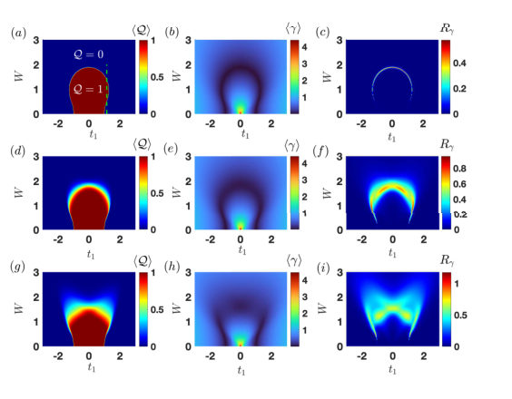
<figcaption class="paper-figure-caption"><b>Fig 1.</b> FIG. 1. The average of the topological quantum number ⟨Q⟩, and the average ⟨γ⟩and relative variance Rγ of the Lyapunov exponent with the system size of N = 5×104, under Nr = 105</figcaption>
</figure>
<figure class="paper-figure-card">

<figcaption class="paper-figure-caption"><b>Fig 2.</b> FIG. 2. The finite size scaling for the average and relative vari- ance of Lyapunov exponent with the disorder strength W = 1 under Nr = 5 × 104 disorder realizations. Panels (a, c, e) ex- hibit the average of Lyapunov exponent for parameters α = 0, 1.5 and 2.5 cases, respectively. while panels (b, d, f) show the corresponding relative variance of Lyapunov exponent.</figcaption>
</figure>
<figure class="paper-figure-card">
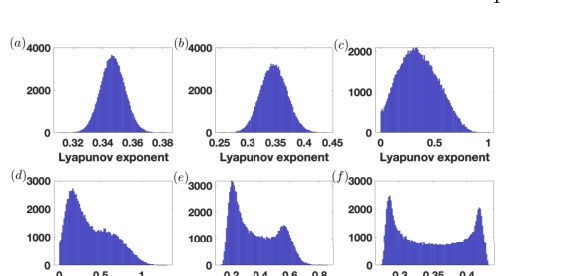
<figcaption class="paper-figure-caption"><b>Fig 3.</b> FIG. 4. Histogram of the Lyapunov exponent for different correlated parameters α with the disorder strength W = 1, intra-cell coupling t1 = 0.8, and system size N = 104 under Nr = 105 disorder realizations. (a) α = 0. (b) α = 1. (c) α = 2. (d) α = 3. (e) α = 5. (f) α = 8. (g) α = 10. (h) α = 15. (i) α = 50.</figcaption>
</figure>
<figure class="paper-figure-card">

<figcaption class="paper-figure-caption"><b>Fig 4.</b> FIG. 3. The average topological quantum number ⟨Q⟩, the average and relative variance of Lyapunov exponent as a func- tion of correlation exponent α with disorder strength W = 1 and system size N = 5×104, under Nr = 104 disorder realiza- tions. (a) The average topological quantum number. (b) The average the Lyapunov exponent. (c) The relative variance of Lyapunov exponent.</figcaption>
</figure>
<figure class="paper-figure-card">

<figcaption class="paper-figure-caption"><b>Fig 5.</b> FIG. 5. The topological quantum number Q and Lyapunov exponent γ with system size N = 105 and correlation param- eter α = 2 for two different disorder realizations. (a, b) The topological quantum number (a) and Lyapunov exponent (b) for one specific disorder configuration. (c, d) The topological quantum number and Lyapunov exponent for another specific disorder configuration.</figcaption>
</figure>
</div>

<p><strong>Summary.</strong> This work explores how long-range correlated disorder fundamentally changes the nature of topological Anderson insulators, causing them to become non-self-averaging. The authors demonstrate this by showing that the relative variance of the Lyapunov exponent remains finite in the thermodynamic limit, indicating a breakdown of standard averaging theorems for these complex quantum states.</p>
<p><strong>Why it may be interesting.</strong> The breakdown of self-averaging is a critical concept in disordered systems theory, suggesting that standard ensemble averaging techniques fail to capture the true physics near topological phase transitions.</p>
<details>
<summary>Detailed structure</summary>
<p><strong>Main problem.</strong> The research investigates topological Anderson insulators under long-range correlated disorder, a regime poorly understood compared to standard uncorrelated disorder.</p>
<p><strong>Main result.</strong> Long-range correlated disorder can induce non-self-averaging behavior in the topological states, meaning single sample properties deviate significantly from ensemble averages.</p>
<p><strong>Method.</strong> The analysis relies on calculating and analyzing the relative variance of the Lyapunov exponent ($\gamma$) across multiple disorder realizations to diagnose self-averaging versus non-self-averaging regimes.</p>
<p><strong>Model / system.</strong> The model used is a disordered Su-Schrieffer-Heeger (SSH) chain, incorporating long-range correlated disorder defined by a power-law spectral density $S(k) \sim 1/k^\alpha$.</p>
<p><strong>Key observables.</strong> Topological Quantum Number ($Q$), Lyapunov Exponent ($\gamma$), and the Relative Variance of the Lyapunov Exponent ($R_\gamma$).</p>
<p><strong>Important parameters / regimes.</strong> The correlation parameter $\alpha$ (quantifying disorder range), the system size $N$, and the number of disorder realizations $N_r$.</p>
<p><strong>Assumptions / limitations.</strong> Calculations are performed at half-filling using large system sizes ($N = 5 	imes 10^4$) and many disorder realizations ($N_r = 10^5$).</p>
<p><strong>Figures summary.</strong> Figure 1 shows how $R_\gamma$ behaves for different $\alpha$, indicating non-self-averaging when $R_\gamma$ remains finite in the thermodynamic limit. Figure 2 plots average and relative variance of $\gamma$ vs. $N$, confirming fixed constant values for non-self-averaging cases.</p>
<p><strong>Paper structure.</strong> The paper establishes the problem by contrasting self-averaging (short-range disorder) with the complex effects of long-range correlated disorder, demonstrating mathematically that this correlation leads to a finite relative variance in the thermodynamic limit, defining the 'non-self-averaging topological Anderson insulator'.</p>
</details>
<details>
<summary>Abstract</summary>
<p>Current research on the disordered topological quantum phases primarily focuses on the uncorrelated and short-range correlated disorder regime. These topological Anderson insulators are typically self-averaging. However, topological quantum systems with long-range correlated disorder have received limited attention due to the absence of tractable analytical methods. In fact, the long-range correlated disorder introduces more complex effects on topological quantum states. Here, we demonstrate that the long-range correlated disorder could induce anomalously statistical feature where the topological Anderson states become non-self-averaging, and the phase diagram is strongly dependent on individual disorder configurations. We term this statistical phase the non-self-averaging topological Anderson insulator. The non-self-averaging property is identified by the non-vanishing finite values of the relative variance of the Lyapunov exponent in the thermodynamic limit, alongside the non-Gaussian distributions of the Lyapunov exponent. Consequently, the topological properties of a single disordered sample deviate from the ensemble average, causing a breakdown of the central limit theorem. The non-self-averaging topological Anderson insulator provides insights into the interplay between correlated disorder and topology.</p>
</details>
<p><sub><a href="#top">↑ back to top</a></sub></p>
<hr>
<p>
<a href="index.html">← Index</a>
 · <a href="papers_03.html">← Previous</a> · <a href="papers_05.html">Next →</a>
</p>
<hr>

</body>
</html>
